What is this?
When I first started talking to game developers about modding in Unreal Engine, I realised that there are both misconceptions and a complete lack of knowledge of the field. My goal is to inform both developers and modders of all the possibilities that modding can offer. Only known and used methods will be covered, which means that I will not explore potential options that don’t exist yet, such as ones covered in this post.
If you are reading this with a negative perspective of modding, I encourage that you keep an open mind and read at least the overview section before the deep dive into everything there is to know. If you know that you want to add mod support, great! Feel free to skip the overview section and go straight on to the good stuff.
- Buckminsterfullerene
2026 update: I would like to draw your attention to this excellent talk by the head of engineering at mod.io which discusses many of the points covered in this guide and their own insights.
Credits
- Sbsce from Stonebrick Studios for providing cyubeVR’s mod loading code
- Archengius from Coffee Stain Studios for explaining modular builds, helping with modkit creation processes, and generally knowing an insane amount about backend UE workings
- JonasHR from Ghost Ship Games for insight into the internal Deep Rock Galactic mod system
- Daniel from Minakata Dynamics for being an awesome guy to bounce ideas back and forth with
- Narknon for having almost every 4.15+ engine source downloaded to provide information quickly
- Members of the Unreal Engine Modding Discord for information tidbits
Where to find me
- Discord -
buckminsterfullerene(please join the Discord first so I know where you are coming from) - GitHub
- Epic Games Developer Forums
Versions
- 0.1 - 2023-01-20 - Initial release of first draft
- 0.2 - 2023-01-21 - Markdown pass, rewrote DLL injection section
- 0.3 - 2023-08-05 - Started guide about developer provided modkits
- 1.0 - 2023-09-24 - Added most detail to developer modkit section, reworked parts of the guide to be updated with new information/methods/engine versions
- 1.1 - 2024-02-15 - Added ContractorsVR case study, added new useful resource links where necessary, fixed some poor wording
- 1.2 - 2024-03-06 - Moved Astro Colony case study to match the format of the document
- 1.3 - 2024-09-25 - Update links
- 1.4 - 2026-05-05 - Don't recommend turning off
Use IoStoresetting for UE5 (because community tooling to mod IoStore files exist now), changes to the basics since last edits, added Whiskerwood case study, added Captain of Industry case study - 1.5 - 2026-06-24 - Overhaul guides related to modkits - write about cooked editor
- 1.6 - 2026-07-16 - More detail related to modkits and cooked editors
No AI was used in the writing of this document
Overview
Epic Games have stated in this forum post, that "Unreal Engine 4 has been designed with modding in mind". They then go on to explain that since the engine source is available, and there is great documentation, mods have a lot of potential. While this is certainly true, Epic Games do not seem aware of how Unreal modding is actually done in practice, as underlined by their out of touch Robo Recall UGC demo and the need of real research to be done by third parties.
Why make mod support?
The most important thing that mods offer a game, is "a second life." If official mod support is enabled for a game, and is easily accessible, it will take a significantly longer time to lose players after development stops, as well as it being more interesting alongside normal updates.
The game gets content for free, and in many cases more sales because of certain big mods. There are plenty of people who have bought games because of mods, like flatscreen to VR (Virtual Reality) mods.
While likely biased, I'm aware that mod.io have done industry research on this and have found that on average "games with mod support have a 23% advantage in revenue over those without in a 5 year period". And that "by year 2 of having mod support, games had a 64% advantage in concurrent users over those without - up to 90% by year 5." source.
Misconceptions
"All mods are cheats!" It depends on the type of game, but generally this is a closed-minded way of thinking. You do not have to look far to see thriving modding communities that have completely changed the game in a positive way. Minecraft is the most well-known example. While they are both "modifications," mods and hacked clients should not be considered the same. I am vehemently against cheating in any game – because like most gamers, I have suffered from games with terrible cheating problems. If mods or methods have any overlap with the potential to be used for malicious purposes, I will discuss it.
I have seen a couple of indie game studios dismiss mods because they think that modders are trying to undermine them by adding features that fit the game’s style to make them look incompetent for not adding such features themselves. While this does have some reason – players may ask for a feature and the developers see that it does not fit the direction of the game they want to go in, thus making players upset – nobody should be like that. You have got to think, why would someone spend tens or hundreds of hours of their life to create interesting content for a game? Because they are passionate about the game and want to see if they can improve the experience for others.
One extremely common and ignorant misconception that I see a lot is something like "mods are bad because they allow you to rip our art/audio assets out of our game." Which is just not true – there are plenty of tools – that are not mods – that make it surprisingly easy for anyone to do, so really there is no hope if you want to stop your assets from being ripped. Asset encryption exists, but of course there is another tool and several methods that exist to crack the key anyway. If modding did not exist, the asset ripping problem would not change.
While I agree that ripping assets from games is a big problem, it is extremely useful when making some mods. For example, if a mod wants to make an edit to a model, they can rip the mesh and its skeleton and use them as a template to edit the model rather than having to remake from scratch. But modders should be aware of the terms of use/legal policies for each game, so developers should make them as clear as possible.
The final thing I want to mention is that there are a few studios that have dismissed modding as an annoyance due to the assumption that players using mods can clog up the crash report stack with mod bugs. This is certainly a problem, which is why it is vital that a system is implemented for differentiating between modded games and vanilla games, in order to filter through crash reports. UE makes the crash reporting system highly configurable, so combined with detecting mods via the mod support system, it is not difficult. In some circumstances, mod crashes have brought light to previously unnoticed, subtle issues with the core game systems, so they can be useful.
Genre of game informs types of modding
There are several factors that informs the type of modding that should be done on a game.
The most obvious thing is what type of game it is. On the one side, if it is a competitive PvP game, should it support modding at all if it could be easy for a player to gain an advantage over others? And on the other, if it is a singleplayer sandbox game, what reasons are there to not add mod support?
The Basis of all Modding
Now that the various characteristics of mods have been lightly discussed, I can go into detail about the modding methods that exist, their pros and cons, and how they could be supported. It is vital for the developers to know what the modding pipelines are to best support them.
Pak patching
This is the most fundamental part of UE modding because it works in every game and has been used as the simplest form of modding for years. "Pak" refers to the UE .pak file archive format that (until IoStore was introduced) stores the game's cooked content.
To keep the rest of this section easier to understand, it assumes that the game has the setting Use IoStore disabled - however this method works exactly the same on IoStore but with the triplet container files instead of just the one.
Many games will have one monolithic pak file with everything inside of it, but others have "chunks" of files categorised by certain asset types, DLCs, levels etc; whatever the developers decide. This is important to know, because it means that the engine can mount multiple pak files from the Contant/Paks/ folder.
So, knowing this, what happens when two or more pak files have assets in the same name and relative path? The pak that is mounted most recently replaces any existing assets. Mount order is decided alphabetically. For example, if we have pak-chunk-0.pak and pak-chunk-1.pak that both contain the asset /Game/BPCharacter.uasset, then the asset in pak-chunk-1.pak will be the asset that is loaded because it "patches" over the top of the asset in pak-chunk-0.pak.
If this is not already enough, UE has a built-in system for giving direct mount priority to any pak files that have the suffix _p in their name.
Modders can combine the above two methods, to always make sure that their mods are loaded into the game. Consequently, the basis of modding is replacing existing assets in a game with edited or entirely new ones.
Finally, it is important to know that custom C++ classes cannot be loaded into the game using pak files, since they are only for assets. But that is not such a big deal as you might initially think, which will be explained in the Blueprints section.
Asset editing
As you know, Unreal Engine source is freely available, meaning that anyone can look at the code to see how certain systems work to try and reverse them. This is precisely what happened with the various cooked asset formats (.uexp, .uasset, .ucas, .utoc, .umap etc.) and several tools have been developed to make exploring, parsing, and editing these files as easy as possible.
The most basic form of asset editing is just changing the default values of primitive variable types like strings, floats and booleans. It can be done on every engine version by all asset editing tools. A typical use case would be changing the damage of a weapon.
The next level up from that is changing references to classes and objects, for example switching a component on an actor from one asset to another. Asset editing can go much further with super advanced techniques, but you get the point.
There is also localization editing, where the localisation files, that have the extension .locres, are edited, since that is usually where many of the games’ strings are kept. This is handled by a separate tool.
Asset editing is the most accessible method as many tools and documentation exist for it, but it is also quite limited and has big downsides:
- If the game updates the asset, it is very likely that the edit will be impacted due to the offset changing
- This method requires replacing the entire asset, which makes conflicting with other mods or even the game itself much more likely - even if the mod is changing one value out of hundreds in the asset.
Audio
The quality of audio modding is heavily influenced by the sound system that your game uses. The easiest system to mod is the default UE sound system that was introduced in UDK (UE3), as it doesn't require extra plugins or toolsets to mod - everything can be done in the base engine. The extent of modding existing games' audio using WWise or FMod is just by directly replacing the audio files. To add new audio, modders can download the FMod or Wwise plugin files for the version the game is using.
Modding the UE sound system
Audio modding for games using the UE sound system has a slightly higher bar than asset editing, in that modders need to install the version of Unreal Engine that their game uses. The general pipeline for all audio mods, is recreate the audio asset with the same path and name inside of an Unreal Engine project with the desired changes, then cook and package from UE into the pak file.
There are 3 methods of audio modding for games using the UE sound system:
-
Directly replacing sound waves. Modders can import their .wav/.ogg audio file into the same name and location as the original they wish to replace
-
Replacing sound cues. If a modder recreates a sound cue in the same name and location as the original, they can:
-
Make their own sound cue graph
-
Use as many custom sound waves as they want
-
Use custom attenuation, concurrency or submix settings
-
Recreate other referenced assets in the original, such as sound class, and reference them in their new cue. This is a vital component that modders should follow if they want their mods to be able to be controlled by the game’s audio sliders, ducking and other systems controlled by those assets
-
-
Replacing other audio asset types, like making custom sound class or submix hierarchies, replacing attenuations, sound curves, etc.
If you want to get an idea of any of these methods, you can have a skim through the audio modding guide for the game Deep Rock Galactic. The examples use that game, but every technique is transferrable to any other using the UE sound system.
As you can see, all audio modding is, is just replacing existing files. If modders want to use audio in more advanced contexts, like adding entirely new sounds to places that do not already have them, then they must use blueprint modding, explained later.
Visual (textures, models, animations)
This is by far the most popular kind of modding. If a game’s files can be unpacked and mods loaded with normal Pak patching methods, it is almost guaranteed that visual modding can be done on it. They can be low effort or very complex, high effort mods or anything in between. They are also client-side only, which means that they can usually be loaded without the server knowing and thus won’t affect the other players (unless created with malicious intent, e.g., making world models transparent).
The process for most visual modding for the longest of times is opening UE Viewer (also known as UModel) and exporting the texture/model/skeleton/animation from the cooked assets, into a format that can be imported into Blender, 3DSMax or whatever other software that is being used.
If the modder wishes to import the asset into UE, they will need to use another tool to export from their software of choice into FBX. In order to replace the asset, they must import into UE with the same name and location as the original and then they can cook and package their mod.
In 2022, there were tools such as this Blender Plugin popping up that allows models/animations/skeleton .uasset files to be imported directly into Blender. Modders can then make their edits and export the asset straight back to the .uasset format and replace the original in the game. This is ground-breaking because it no longer requires anyone to install Unreal Engine to make model edits.
In 2026, FModel is now the go-to tool for viewing and exporting visual assets in the game as it now comes with various built-in tools for viewing visual assets like 3D models. It also supports exporting to several file formats including its own new .ueformat extension that supports animations and models and comes with a Blender plugin to import the file format into Blender.
If you wish to know more about visual modding, there are plenty of videos and guides out there that explain the various methods and processes in greater detail.
Blueprints
Blueprint modding is the most accessible form of "advanced" modding, in that modders can create new assets and write code to produce mods that do more complex things. It also happens to be the easiest technique to directly support, which is discussed in the Mod Support section.
Blueprint mods can do everything normal UE blueprints can do, which means that at an absolute minimum, there are a lot of possibilities. There is an exception to this however – any modules of the engine that are stripped from shipping builds of games will not work when accessed by blueprint. For example, the cheat manager object is stripped by default (for obvious reasons), so any calls to the cheat manager will not work.
References
Blueprints can get references to any asset in the game as well as any C++ exposed to blueprints. This is especially important, because references are just strings that point to the package name of an asset or exposed C++, where:
/Game/is an asset inside of the Content folder, e.g.,/Game/Blueprints/BPCharacter/Script/is a C++ class, e.g.,/Script/ACustomCharacter
Which means that references are persistent when cooking and packaging, therefore allowing "fake" references to be made, and then when the blueprint is loaded into the game, it will reference the real, unchanged asset.
To make the fake reference, you guessed it, modders can make the asset in the same name, location, and type as in the game and reference it in the blueprint. This is coined as "dummying." It will work, as long as they do not pack the dummied asset into the mod, otherwise it will replace the original and cause issues.
With this concept now in mind, faking references can go much further. Modders can dummy properties, functions, delegates, components, and events inside of the dummied asset, which they can then access from their mod blueprints. The following two images show a widget that has had a few properties and events reconstructed so that they can be referenced in a mod blueprint.
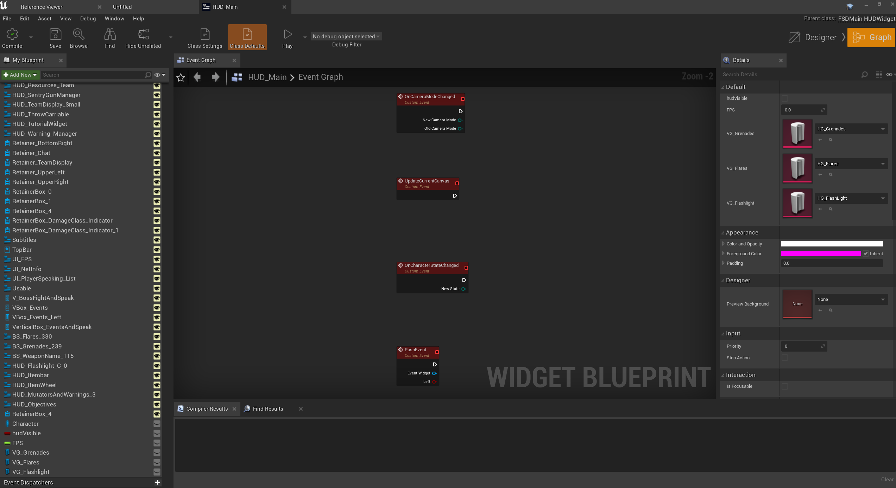
Reconstructed properties inside of a widget
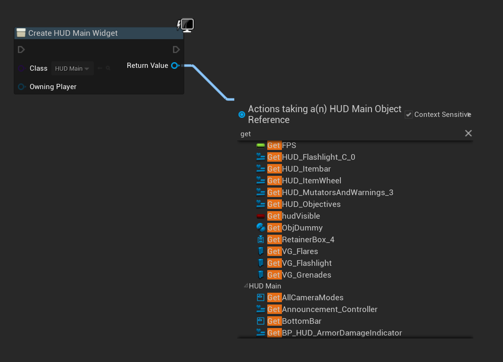
Calling these properties by reference of this asset
But still, this concept can be pushed even further. Can you dummy the blueprint exposed C++ headers that the game has? Absolutely. Every single function exposed with UFUNCTION, every property exposed with UPROPERTY, enum with UENUM, struct with USTRUCT and class with UCLASS, can be dummied in the project and accessed from blueprint.
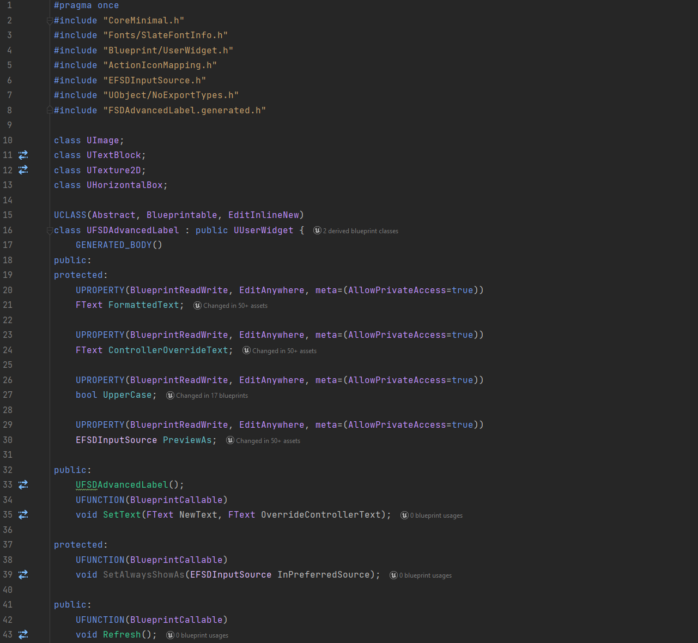
Some header code reconstructed for a custom User Widget class
Remember when I said that C++ classes cannot be loaded into the game using pak files, but it is not that big of a deal? This is why. If you want modders to be able to access as much C++ in your game as possible, expose it all to blueprint! Of course, there is a minor performance impact, and compiling the game takes longer since there is more work for the Unreal Header Tool. So, there is some weighing up to do with code that you care about performance overhead for.
Not only are your own C++ headers able to be dummied, but so are any plugins that your game uses. So, depending on which plugin options you have enabled, blueprint mods will be able to use any exposed plugin code. While it does not change any functionality, modders could choose to download the plugin’s source, if readily available, and insert it into their projects. Depending on the plugin, and what they are trying to do, they could then test any blueprint code using the plugin, in-editor, saving them from having to cook, package and test in-game.
So, as you can see, blueprints are extremely powerful tools for creation. Any blueprint code that developers can produce, modders can also produce, if they wanted to.
Force reflection
But, unintuitively, modders can access more C++ in their blueprints than developers. This is because the flags that UHT definitions are purely used to control how much data is viewed in the editor.
Let’s say that a UFUNCTION in the game ‘Z’ has no BlueprintCallable flag. In the Z's UE project, developers will not be able to find the function in the node menu. However, if modders recreate the header for Z in their own project, and give it the BlueprintCallable flag, they will be able to see the function. Most importantly, the function will work in-game.
| What is set in Z’s actual project | What modders can do in their recreated project |
|---|---|
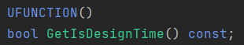 | 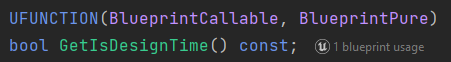 |
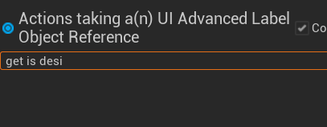 | 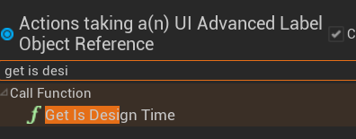 |
As a reminder, if the game has no UFUNCTION() macro above something (i.e, it is not reflected), then the modders will not be able to use it at all; this goes the same for any other reflection macros.
Luckily, there is a tool that dumps all the C++ headers in the game into UHT format with all their corresponding flags and generates a new UE project based off these headers. You can find the repository and wiki page for that here.
Template objects
Blueprint mods can also do some very clever things that game developers never need to do - modify class default objects (CDOs), component templates & default subobjects at runtime. These tricks can be used to unlock what would otherwise be a major downside of blueprint modding over asset replacement - being able to modify the "default values" of blueprints and components which then get copied into any instances created after the modification.
I wrote a comprehensive guide on this technique here. Please give it a read as it will widen your understanding of how Unreal Engine creates instanced objects.
If you reached the end of the guide where it talks about the use of the referenced objects array to keep the object defaults from being garbage collected between levels, you would see that in UE5, it is not able to be used. To maximise support of this technique with minimal effort, the only thing you need to do is to add a blueprint callable C++ function to allow adding objects to this array.
How blueprints are loaded without mod support
Without official mod support, it is quite difficult to load blueprint mods. Modders are not able to simply replace any asset with a mod blueprint since it likely needs to be loaded all the time, and they would also have to reconstruct 1-1 the blueprint and its code that they replace so that the game does not crash. Unless the asset is basically empty (thus easy to reconstruct correctly), this is just not possible for most.
So, how do they do it?
You have almost certainly heard of a mod loader. There is usually one for any community developed mod support for most games on most engines. They are not the same as a mod manager. A mod loader is as it is named – it loads mods.
In Unreal Engine, the methods used can vary, depending on each game, their engine versions, engine modifications, etc. Here is a high-level overview of the most common methods, in order of difficulty:
-
Completely replace an asset that is always loaded and does not do anything important, e.g., a credits widget in the escape menu
-
Using a "game generic" mod loader that hooks into a common UE function using DLL injection and loads blueprint actors
-
Edit an asset (using an asset editor) that is loaded at the construction of every level, e.g., a HUD widget or gamemode actor, to kismet splice in a custom function that loads a blueprint actor that has all the mod loading code inside of it
Once any blueprint or widget has been loaded with custom code in, the mod loader can then go about loading any other mods that maybe are within a certain folder in the asset content, using normal UE asset registry functions.
For example, a mod loader may require blueprint mods to be inside Content/YourModName/ModActor, inside of their UE projects before they cook & create their pak file. That way, in the mod loader's code, they can just check every subfolder in /Game/ for the ModActor actor and spawn that.
As you can tell, the need for natively spawning blueprint mods is top priority. Luckily, it is quite easy, but that is explained in the "Mod support" section.
C++
C++ modding is natively allowing C++ code to be run by the game. While this is by far the most powerful viable way to mod games, it is also dangerous as allowing uncontained C++ could allow malicious code to run. It is not nearly as easy for blueprints to be malicious as they do not have file I/O or web sockets support, unless explicitly provided by the developers or a plugin. You could introduce a special protocol for C++ mods to be uploaded e.g., by running all mods through Virus Total, or requiring that the source code is kept open source, etc. But it’s entirely up to you how you want to handle the risk if you choose to go down this otherwise excellent route.
To best provide C++ support, there are two methods:
- Providing an API
- Building modularly
There already exists a very strong C++ and Lua API via a tool called UE4SS that works for any UE game, which you should be aware of, whether or not you decide to go down this route natively.
Additionally, there is a UE plugin called LuaMachine that provides a more native approach to Lua scripting.
Later, in the case studies section, I will go over examples from cyubeVR that provided an API and Satisfactory that built modularly.
Providing an API
If your game heavily leans on C++ code and exposes very little to blueprint, providing an API could be a good option. The usual method to go about doing this would be to produce a template C++ project with all the functions that the game calls/exposes inside of it. Modders can then add their code inside of the functions, build the DLL and the game will call to the DLL during runtime. For example, the project could have a Tick() function that runs the code inside of it every tick.
The downside to providing an API, aside from the security issue I mentioned earlier, is that if you want to provide any UE-specific types, you will have to reconstruct them inside of the template C++ project manually. But that may be legally questionable, by the statement of the Unreal Engine EULA section 4.a.i. The best method of doing this legally, is to fork the Unreal Engine source code on GitHub, then force push all your template C++ onto the repository. That way, these types are only accessible if modders have access to the original source code.
This could be extended to providing a general scripting system API, such as Lua, but still has the same downsides.
Building modularly
There is a native feature in Unreal Engine that few people know about, called Gameplay Modules. It is where classes sectioned by module are compiled into DLLs, rather than one monolithic binary. I won’t bother condensing what is already explained in the UE documentation for it, since it is already quite short.
If a game is set to build modularly instead of monolithically, it can then load any other DLL inside of the Plugins/ folder, even in shipping builds. A modder can then create a C++ plugin inside of UE, where the entire core UE API is exposed, and they can load it as a "plugin mod" into the game. The plugin can do anything the game’s normal C++ can do – reference, change or create assets. For this reason, this method is by far the most flexible and opportunity-inducing out of any in all of UE mod support.
There is only one game that I know of that has ever used this method for community mod support – Satisfactory. Therefore, I was able to ask the developers of this game – Coffee Stain Studios (CSS) about any drawbacks that they observed:
- Increased code size. In fact, executable size is decreased to nothing, but you get quite a lot of relatively small DLL files instead.
- Slightly increased start-up time and memory footprint. Don’t expect any numbers there, but "it’s really insignificant", according to CSS.
If you have not made any significant commitments to the engine for your game, the bare minimum you can do to change to modular is changing LinkType = LinkType.Modular in the game target.
Then future actions depend on the severity of the changes. Changes that are binary compatible with the stock engine do not need to be shared. If there are changes affecting binary compatibility – e.g., adding new properties, changing or adding virtual functions – they need to be shared with modders. The only legal way to share your engine patches is to fork the UE repository on GitHub and commit your changes to the fork. But if your changes are binary compatible, you can potentially skip that.
If you would like to know more about this method, I highly recommend reaching out to the Satisfactory developers and asking them directly.
UE4SS
The Unreal Engine 4/5 Scripting System is a community developed tool that enables strong mod support for any UE4/UE5 game. One of the ways it achieves this is by providing both a C++ and a Lua API for mods to use. While it does not require you to write mods in Unreal Engine itself, its backend includes a mix of core Unreal Engine C++ and its own implementations of Unreal Engine core API functionality and allows modders to call/access/modify any reflected Unreal Engine functions and properties.
UE4SS itself can be installed simply by placing a couple of DLLs into the Binaries folder and it will inject itself into the game on startup. Depending on engine edits in your game, users may have to find missing AOBs to allow UE4SS to hook into the game's functions that it needs.
Since UE4SS also has a built-in blueprint mod loader, modders can also call or modify their mod's blueprint functions and properties from C++ or Lua, just like they can with native engine or game objects. This allows them to create a mod that is a mix of C++, Lua and blueprint, if they wish.
UE4SS also has a number of built-in utilities such as the live viewer, which is a tool that allows users to search, view, edit & watch the properties of every loaded object making it very powerful for debugging mods or figuring out how values are changed during runtime.
The way that UE4SS handles the toggling of mods, is through a file called mods.txt inside of the game's Binaries/Win64/Mods folder, if the user has installed UE4SS. If you feel like it for whatever reason, you can add a sort of half-baked mod support by checking for this file and showing the user a list of mods in-game that they can toggle on/off by editing the file. While I wouldn't recommend it, it is an option.
DLL Injection
This method is used by modding tools rather than mods themselves, with a couple of exceptions. Injection is either done by using a DLL injector or by proxy injection for example by using one of the DirectX xinput DLLs like xinput1_3.dll.
In a nutshell, for a program to hook into a game, it needs to find the address of the function it wants to hook into. This is done by searching for an "array of bytes" (AOBs) that is unique to the function.
However, since games use different engine versions and have their own custom engine implementations, the AOBs that the tool will try to find for a specific function can change. So, it may be up to the user of the tool to locate the AOBs for the game they are trying to inject into.
Some other things that can cause bytes to change include compiler and compiler version, compiler flags and build mode (debug, shipping, etc).
There are "mods" or tools that use this method that are specifically designed to enable cheating in games, and I condemn those. However, it is still extremely important for modding tools because these programs can provide so much useful information about the game.
The types of tools that use DLL injection usually fall into a few categories:
-
Console unlockers – re-enables the in-game console if it has not been stripped from the game completely and allow unstripped commands to be entered like normal
-
Free camera – allows the player camera to be detached and "flown" around the level
-
Dumping object memory – produces files of internal object information such as reflected C++ headers and blueprint bytecode. This is by far the most useful for tool developers
-
Mod loading – mounts pak files and loads mod blueprint actors
-
Lua or C++ modding - allows the user to run Lua or C++ code in the game. This has been made possible by UE4SS.
Mod Support
Based on what has been discussed, there are 5 major tiers for mod support, in order of increasing difficulty:
- Natively mounting mods during game initialisation
- A mod management system
- Release an SDK/modkit, document, or information on internal systems to aid modders create more high-quality mods faster
- Providing a scripting API
- Enable plugin modding by changing the game build type to modular
Since I’ve already covered tiers 4 and 5 earlier, I will now cover tiers 1 – 3 in more detail.
Natively loading mods
To natively load mods, there are a few options:
- Using the built-in engine mounting system for DLC plugins (least effort to implement, has the most benefits)
- Using a marketplace Pak loader plugin (simplest to use)
- Using the SimpleUGC plugin
- Using a combination of the above, or writing your own system
You will also need to produce a standard for blueprint names, install folder hierarchy and naming, that you must communicate to modders to conform to, but that will all be up to how you want to do it.
This does not just apply to blueprint mods. You can still use it to mount and load in assets for the other modding types like audio, asset editing and visual. Since you are mounting every asset inside of the pak file regardless, any asset replacing an existing one will still work in the same way as the normal Pak patching method.
Pak loader plugin
The first option that I suggest is using this Pak loader plugin because it does pretty much everything you need to do for you. It only costs roughly $20 but the main reason you may not choose this option is due to it not being supported on your game’s engine version.
The plugin allows you to mount pak files from any file location. You can then spawn specific actors from within the pak file via a bit of blueprint code.
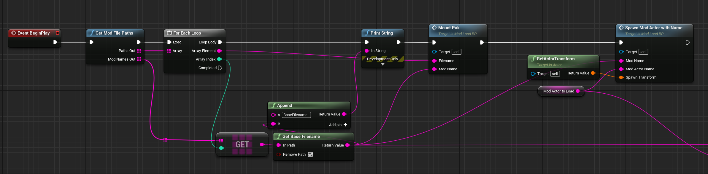
Example code for the overall mount process
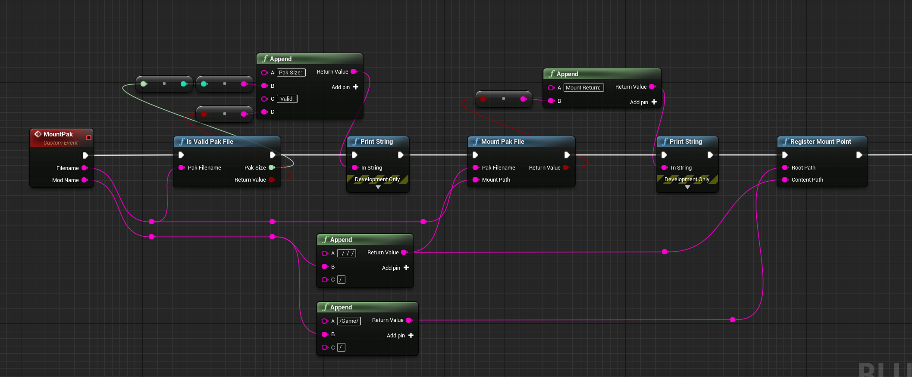
Example code for mounting a pak file
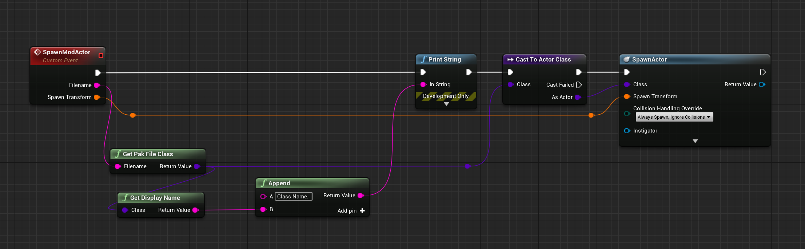
Example code for spawning a mod actor of a specified name
The above images show all of the code responsible for loading mods in the game cyubeVR. The only part that had to be written in C++ was the function Get Mod File Paths which scans the Mods folder for the mod actors that it needs to load.
So, in order to use this effectively, you should first establish what parameters you will require modders to use to load their blueprint mods.
Every time a new level is loaded, the game will need to reload the actors anyway, so this is a good opportunity to also reload any mod actors. To give finer control to modders, I suggest that you require a new actor per level to be provided.
For example, if you have 2 levels – main menu and the world level, you can require modders to have a blueprint actor called InitMenu and an actor called InitWorld to load their mods. If a modder wanted their mod to only load in the world, then they only have to make and put code inside of their InitWorld actor. The "Init" part is just short for "Initialize" - keeping names short saves time and cuts back on potential headaches where spelling mistakes are made.
The downside is that if your game has a lot of levels, it would be annoying, so another option is to require one actor and provide modders with a C++ reflected blueprint function (so that modders do not need to download any files) that checks for the current level name and continues execution flow if it is a level that a modder wants.
SimpleUGC plugin
The "Simple User Generator Content" plugin was originally developed by Epic Games for a mod kit for the VR FPS game Robo Recall by Epic Games. I know a couple of games that use it, except that they both had to heavily modify it just to fit their needs, which are mostly met by the marketplace Pak loader plugin I talked about previously.
SimpleUGC’s way of handling mod files is ignorant of the fact that we can just dummy reflected C++ headers and use them, and you don’t even need to specify the category of "user generated content" in the macro. There’s no point in having it when everyone can use every reflected C++ header in the game regardless of the category or macro flags.
Additionally, their system with the MakeReplaceableActor component is redundant because modders can replace anything by placing the same asset type in the same name and location as the original asset, as I have explained previously. So, since we can just do it for everything anyway, it will save a ton of work not having to add that component for everything that you "want" to be replaced.
The need to create a custom game instance makes modding unnecessarily difficult for modders. If something is not loaded by the normal game instance, then it may be on the UGC asset registry, so modders will need to know to do additional checks for that as well. It is a small thing, but yet another cause for potential headaches further down the line.
But the main reason I do not like this plugin is that it requires the developer to produce a "mod kit" just to allow modders to actually create their mods within UEE. This mod kit is not related to providing any game assets to aid with modding itself, but rather framework files. The best step is no step - it is not ideal as it increases the bar for modders and restricts what can be done.
The plugin may work for you, but to be honest it’s a lot of extra work than needs to be for both sides and if you do end up modifying it, you’re way more prone to annoying crashes and bugs that makes good mod support harder to reach. Note that the plugin only supports UE4, however there is an existing UE5 port here.
Of course, I recommend that you still explore this option yourself; don’t just take my advice and run with it.
Do it yourself
Since the engine core API exposes many utilities related with pak mounting and such, it isn’t really all that difficult to implement your own solution. The Pak loader plugin primarily builds upon the FPlatformFile & FileWalk APIs which is a good point to start at.
If you need something really bespoke, maybe more flexible than the other two methods, this is probably the path you should take. I’ll talk about it in more depth later, but the game Deep Rock Galactic had a requirement for being able to “hot reload” mods during runtime, which is not possible without writing engine modifications yourself.
Be aware though that any DIY solution is prone to more subtle issues that people may not notice for a long time but may cause a lot of issues. For example, in Deep Rock Galactic, there was a bug in the hot reload system where mods were not always loaded in a consistent order and went undetected for a long time. When it eventually surfaced, modders realised that it was the root cause of other issues they were having that they couldn’t explain.
There is an absolutely fantastic guide detailing how you may go about achieving this on the Unreal Engine forums here. I highly recommend checking it out as it explains the process in a lot of detail and I completely agree with the way the implementation has been done through the use of plugin content.
Here's another interesting project that's trying to do it for UE5: UE5 Mod Manager. Definately some interesting code to look at in there, as the author has done a lot of research into the topic himself.
There is also the new UE5.3 "extensible gameplay framework" sytem that's very interesting for mod support. I wonder how much can be done there. But if I were you, I wouldn't try to go too crazy on the new features, as it may go deep into unfamiliar territory and you may end up with a suboptimal mod support solution. But some research into it can never do harm.
Making a better ecosystem for making mods in your game
There are a few ways you can improve the quality of mod support:
-
Don’t hardcode values in your C++. This is a bit of a no brainer, but you’d be surprised how much I’ve seen games do this
-
Use data driven gameplay programming style with data tables and other assets for providing values, as it is much easier to find and modify values than if they are scattered around the project, or worse, hardcoded in C++
-
If using data tables to drive data, then please create reflected C++ functions for data table modification (reading on data tables, adding new rows, modifying existing rows etc.)
-
If using data assets to drive data, make sure you are mounting the asset registry of mods (if mods are as plugins, the engine does this natively) so that the asset registry of the game is picking up mod assets. Also make sure that your asset registry scans for assets of parent class or at worst directory (if mods are plugins) relative to the root folder of the game/plugin so that mods' data assets can be picked up without any extra work
-
-
Provide
.pdbfiles that provide modders with full stack traces and an easier time reversing game code to find out how it works -
Add plugins to game project on request, e.g.,
SteamVR/OpenXRif modders want to make a VR mod -
Provide nice blueprint functions in C++ blueprint function libraries or base classes such as:
-
Reading/writing strings from/to files (and making it clear what path roots are)
UFUNCTION(BlueprintCallable) bool WriteToPlainText(const FString& Filename, const FString& TextContent, FText& OutError, bool Append); UFUNCTION(BlueprintCallable, BlueprintPure) bool ReadFromPlainText(const FString& Filename, FString& OutTextContent); -
Data table modification functions (reading on data tables, adding new rows, modifying existing rows etc.)
-
Allow adding persistent objects by constructing the object and putting it into an array in the game instance, and then initializing them after construction
-
OnMainMenu and OnLevelStart events that have an out parameter with the level that was loaded
-
-
Provide delegates that fire when certain game events happen that you think mods would like to use
-
Provide getters to references of central game systems if they don't already exist
-
Create a "middleware" interface consisting of reflected C++ headers that allow blueprints to interface with an internal C++ system (such as a bespoke tech tree system) or a paid marketplace plugin (such as the voxel pro plugin). This is highly sought after as developers can:
-
Avoid using C++ modding which may pose a security risk
-
Control exactly which parts of a system mods can access, and how
-
Provide the ability to mod previously "unmoddable" systems e.g. a plugin without reflected headers, so couldn’t be accessed via blueprints
-
Mod managers
Arguably, having a good system for users being able to manage mods is just as important as having good mod support systems.
There are 2 main components of mod managers; the part within the game itself that lets users view their subscribed mods and toggle them on/off, and then the 3rd party webserver that users subscribe/browse mods on.
The integration can vary greatly depending on the game and there is no one "preferred" method by modders so there is not much to advise upon. I suggest you just do your own research since there is a lot of material and help available around already.
Mod browsing
While both parts could be integrated into within the game and managed by your studio's own servers, most games stick with keeping the mod browsing to a 3rd party system.
The most common systems used are Steam Workshop, mod.io and Nexus, although the latter is not recommended for official mod support, since content is moderated not by developers, but by Nexus staff.
Personally, I really like mod.io because they do a lot of the heavy lifting with moderation tools, a strong API and flexibility for every game.
Managing mods in-game
Typically, games will have a subcategory in the main menu for managing mods. In this window, the game should display subscribed and/or downloaded mods with their name, description, thumbnail, author and version pulled from either webserver API or a descriptor file within the mod download.
Providing a shared mod settings window
Something that many games do not have however, is a "shared settings window" for mods. If a blueprint mod wants to be able to get user input with widgets such as buttons, sliders and text boxes, they need to figure out how to create their own widgets and manage the mouse cursor, layering, controls, etc. But if a game can provide a central widget for mods to interface with, settings for each mod can be placed in one shared window that makes sense. Since it is part of the game, developers can make the window fit the style of the game, and work seamlessly with their other menus.
A solid way to implement a system like this is to provide a collection of interfaces in a folder that could be part of your mod kit, if you have one. Modders can interface their blueprint mods and settings widgets with these interfaces, which once in-game, reference the actual management code for placing the settings widgets into the menu.
Here’s an example of a shared mod settings window that modders created for the game Astro Colony:
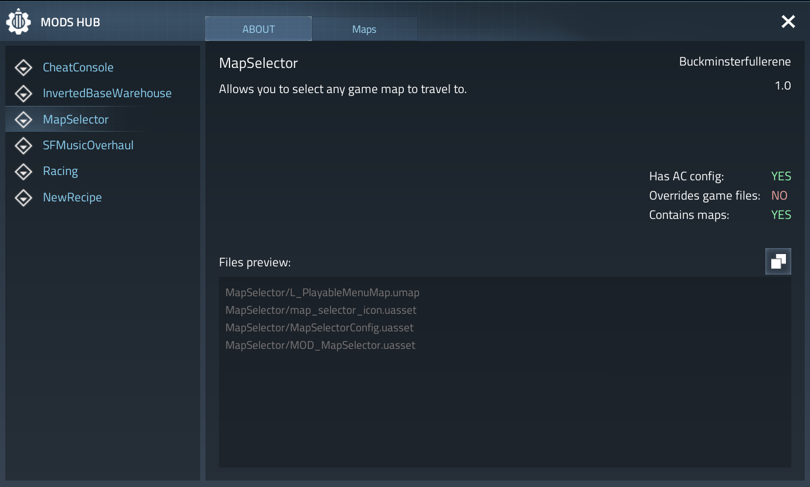
Modkits/SDKs
If you want a thriving mods community, you should provide tools to make things either possible at all, or just easier. While community created tools can cover many bases that developers won’t, it always makes sense for official tools to be created.
A "modkit" refers to an Unreal Engine project that provides access to code and asset references - even if there is no "implementation" behind the references in the modkit project itself.
They are seen as the ultimate form of a developer SDK as they provide almost unrestricted access to the internals of the game natively. This doesn't mean it requires no work to make them, nor mean you can relax your efforts on improving the "moddability" of the game - it just makes the modding process first class.
There are a few types of modkit that can be created. These are explained in more detail later:
- Uncooked editor - contains only source assets
- Cooked editor - contains only cooked assets
- Mixed editor - contains a mix of uncooked and cooked assets, depending on your legal requirements and other reasons
Modkits can be created "unofficially" by modders as a stopgap until the game releases an official one, if it ever does. They are handicapped in several ways but a good modkit will still provide most of the required functionality to make itself useful in the modding scene.
Developer Modkits
Extra credit
I know I've already mentioned Archengius in the home page's credits, but I really feel obliged to mention him again here. Some of the information in the How? section is from his own research and experience, that he has obtained from:
- Working on the critical tools and community modkit for Satisfactory, then getting hired by Coffee Stain Studios
- Working on the official modkit for Satisfactory (currently unreleased)
This is why much of the information here is not information you can just find in the documentation - a lot of work by him and myself has been delving into engine code to figure things out ourselves.
As always, if you have read through this section and are serious about making a modkit for your game, and wish to know more information in more detail, I recommend that you contact him through Linkedin.
Examples of a developer modkit
Astro Colony (uncooked editor)
Contractors VR (uncooked editor)
Why produce a modkit?
Simply put, you can compile your editor uproject to produce binaries for its modules and its plugin modules. Including the cooked (or uncooked) content files, this allows for a modkit that:
- Allows for modders to test their mods in-game in-editor so do not have to package and boot the game for every test, with the ability to use the editor to create mods
- Does not expose any source code of the game or its plugins (unless you want to)
- Has automation utilities built into it that makes the modding pipeline far less complex, for example a button for packaging a mod, or a button for uploading a mod to a 3rd party mod hosting service
- Has developer editor tools in that your team uses for helping with making content in the source editor, for example with automating tedious tasks
The only pre-requisite for modders to use a modkit like this, is the engine install for the version that the game uses. If the game uses a custom engine, then you will need to provide the engine fork as well.
Cooked content?
Due to the existence of UEFN, Epic Games have invested a lot into making the editor able to handle cooked content well - and that gets better in each new engine version.
With a few small engine changes, cooked content can act similarly to uncooked content in the editor - and importantly, still allows all references to exist in blueprints, widgets, animations, materials etc.
I will go into a lot more detail about cooked editor in the How to create an editor modkit & Cooked editor engine changes pages but using cooked content is very beneficial because:
- It keeps game content read-only - mods should not be directly modifiying game content as a general rule
- It keeps the project content size minimal - if you set up the editor to directly mount the cooked content from the game install files, there is no need for duplicate data on disk
- No compiling shaders required during editor startup or on cook, as it directly uses the compiled shader files when rendering materials - also means no need to create & distribute a shared DDC pak
- Editor startup time is very short - all uncooked content is loaded at startup, but cooked content is only loaded when needed (e.g. it or an asset that depends on it is opened or referenced), as well as no shader compilation required
- If you're using World Partition levels, the amount of loose files it generates is ridiculous and is not really fit to be handled by distribution fronts, so having it as part of the cooked content is nice
- Since you are using the very same cooked content from the game install, there is no need to worry about IP concerns if you are using marketplace assets/plugins - distribution as cooked content already has to be allowed by the licenses, and you aren't breaking that
- Your legal team (if applicable) would have a harder time justifying why not to allow a modkit to be created - no uncooked/source content, no source code, mounting content from game install (thus needing to own the game to use it)
There are a couple limitations to it:
- Engine changes are required to make it useful - so more effort & bigger distribution size (if not already distributing custom engine)
- Some asset types (animations, skeletal meshes, meshes, niagara asset etc.) are not copyable so mods cannot make copies to modify them in their mods - but this could probably be fixed with more engine changes that I do not cover in this guide
What if I want to include uncooked (source) content? "Mixed" editor
No problem! Please do, and the editor is even easier to setup with uncooked content than cooked content, but is simply not a popular choice among studios due to IP/legal issues, hence why I am suggesting cooked editor as a more likely choice.
Uncooked content has the following benefits over cooked content:
- Content is not read-only (but still shouldn't really be edited directly by mods) and can be copied into mod content and edited to fit the mods' needs (cooked content can be done like this with some caveats I will get into later)
- Does not require engine changes to enable
- Includes all material shader code and blueprint code
As a compromise, you may choose that you would like to have some asset types as cooked assets, and some as source assets. For example, you want to give modders access to as much source as possible, while also adhering to licenses and other legal requirements.
This can be achieved quite easily!
You need more context from this section in the cooked editor engine changes page, but basically, you can have your editor prioritise loading loose files that are on disk in the project's folder over the cooked files in your packaged game content. These loose files can be both source assets and cooked assets, but you'll want these to be the source assets.
Additionally, you could also look into enabling editor optional data so that you don't have to worry about loading the compiled shaders for materials, while the materials are still cooked files!
What if my game contains paid plugins from the marketplace?
If your game contains paid plugins from the marketplace, you may be concerned about modders being able to use them for free.
- If it is a C++ plugin, then you should never include the source files without direct permission from the author, but the binaries are fine to include, as they are in the shipped game build anyway
- With cooked editor, you do not need to include source content, so you should not be breaking any licenses by including it in the modkit
Wouldn't allowing PIE be an issue where players can play the game for free?
This is a fair concern, but it is fairly easy to deal with this. It's up to you how you want to do it, but here are some ideas:
- Configure the cooked modkit to mount the content containers directly from the game install folder. This will then require users to buy the game and have it installed to use the modkit
- Have an editor plugin that is always running, and when the player is in PIE, it will limit the play time per session to only a few minutes, then force close PIE. If they are needing longer, then it may be fair to require them to package their mod and test in the actual game
How to create an editor modkit
Before reading this page, please read up on the page for explaining engine changes necessary for enabling cooked editor.
Building editor and engine (if applicable) for distribution
Everything I describe here can be automated fairly easily using a wrapper batch script, or BuildGraph, in order to make making new modkits simple for minor or major updates. I also recommend that you experiment with build flags to see what might work better for you.
Building the editor
The process of building your editor differs depending on whether or not you are planning on building modularly and allowing modders to link against your game's modules, or if you are planning on shipping a custom engine build.
-
First, you will likely need to make a copy of your game's project, as you will be making changes to configs and content (only partial content if cooked editor, methods to keep file size down if uncooked editor)
-
Next, inside of your
.uprojectfile, you must make sure that the engine version set inside it is your version (i.e. custom engine if you have one) -
Build your project solution. This will make your binaries. Development and shipping configurations are fine - you can decide on the pros and cons for size and QoL (crash reporting etc). You can also build the binaries for your server targets if you're looking at server mod support too (which I won't cover here, as I don't have experience with it)
-
After you build the editor project, you can look at keeping the file size down, which is discussed in detail
-
Get the files and folders for your project and prepare them for distribution, according to the following table:
| Project file/folder | Do you need it? | Notes |
|---|---|---|
Binaries | Yes | Plus PDBs if you want them |
Build | No | If you have any automation modules that are needed for the build |
Config | Yes | Make sure to not ship crypto/private API keys accidentally |
Content | Yes | Base game content (uncooked editor) or selected loose files (cooked editor) |
DerivedDataCache/Compressed.ddp | No, only required for uncooked editor and you want to include it | Discussed here |
Source/<ModuleNames>/<ProjectName>.Build.cs | No, only if you are shipping with C++ mod support | Allows the C++ mods to link to the modules |
Source/<ModuleNames>/Public | No, only if you are shipping with C++ mod support | Allows the C++ mods to link to the modules |
Plugins/<PluginNames> | Yes | .uplugin file, content & binaries |
Plugins/<PluginNames>/Source | No, only if you are shipping with C++ mod support | Allows the C++ mods to link to the modules |
<ProjectName>.uproject | Yes |
Building your custom engine
If you need to ship your own custom engine, you must additionally perform the following steps:
-
Compile Binaries for all relevant tools (UBT, UHT, UAT, UnrealPak, ShaderCompileWorker, UnrealInsights, LiveCodingConsole, etc)
-
Create an installed engine build. Get the files and folders for your engine and prepare them for distribution. This one is a bit more complicated, and requires a bit more of thoughtful includes - for a decent list you can look into
Engine/Build/BuildGraph/InstalledBuild.xmland related files, you need a roughly similar list of files.
| Engine file/folder | Do you need it? | Notes |
|---|---|---|
Binaries | Yes | Binaries for the relevant tools (UBT, UHT, UAT, UnrealPak etc.), the editor and the game. Weigh up if you want to keep or strip PDBs - they inflate engine size, but provide valuable information when debugging engine crashes |
Build | Yes | Batch scripts and other things necessary for working with the engine distribution |
Config | Yes | Default engine config files |
Content | Yes | All of it |
Source | Yes | Engine sources, target files etc. |
Sources | Yes | Engine shader source files |
Plugins | Yes | Only the plugins that your project uses - can rack up a lot of space savings |
Templates | No | Remove to save space |
Samples | No | Remove to save space |
GenerateProjectFiles scripts | No | Installed engine build is not designed to be built from source |
You should build the engine for all platforms you would like to support mods on - at minimum for Win64. If you have a cross platform game and you wish to allow mods to be packaged for consoles, then you will need to allow modders to do cloud cooking on your own servers.
With some of these changes (view my InstalledEngineFilters.xml here as an example), I was able to reduce the UE5.6.1 installed engine build from the stock 26GB to 18GB - which also compressed to .zip to 7GB for distribution. The command I use for this is
F:\UnrealEngine\Engine\Build\BatchFiles\RunUAT.bat BuildGraph -script=Engine/Build/InstalledEngineBuild.xml -target="Make Installed Build Win64" -nosign -set:HostPlatformOnly=true -set:WithDDC=false -set:GameConfigurations=Shipping
Where mods go (in the project)
Ideally, when a new mod is created in a modkit, it is created as a content only plugin (or a C++ plugin with content if you are supporting C++ modding).
If you are using gameplay feature plugins, consider making mods as those plugins for even more flexibility.
If you are using data driven gameplay and are using the asset registry scanning techniques, mods as plugins can then place their own data assets into the directories matching the game's. The engine will automatically mount the plugin's asset registry and merge it into the game's one, meaning that any asset registry scans of directories or assets of parent class will automatically pick up those from mods without any extra work from the game.
This offers the most flexible way of managing mods within the editor, as you can easily package them seperately from the main game content. Additionally, when distributing updated versions of the modkit's content, you won't have to worry about overwriting any mod content.
Then, inside each mod, you have any required files responsible for loading the mod, such as the initialization blueprint that the mod loader checks for and spawns, or the mod config file, which will be further discussed in the extra features section.
Editor configs
Aside from copying over your project configs (minus those contianing sensitive info), there are some additional configs you need to know about when setting up the editor.
Packaging configs
When the mod is cooked and packaged, UE will automatically also try to cook any game assets that the mod references, all the way up the dependency tree. Since game content should never be cooked, you need to add all game and game's plugins content folders to the DirectoriesToNeverCook config. In UE5+, you need to set CookContentMissingSeverity to Warning so that the cook does not fail due to not being able to cook dependencies.
Cooked editor configs
If using cooked editor, you additionally need to set ZeroEngineVersionWarning=False, cook.AllowCookedDataInEditorBuilds=True & s.AllowUnversionedContentInEditor=1.
Stripping PDBs
If you're intending to ship the engine or editor with PDB files, it's generally a good idea to strip them using PDBSTRIP first. This is a tool that comes with Windows, and it's usually located in C:\Program Files (x86)\Windows Kits\10\Debuggers\x64\srcsrv\pdbstr.exe.
It reduces the size of the PDB files by a magnitude of 100, making them as small as the resulting binaries.
However, some information from the PDB files, like private symbol names, are lost, but you can't really distribute the non-stripped PDBs because take so much space for multiple targets in multiple configurations.
Reducing editor size & QoL (uncooked editor only)
If your uncooked modkit is huge (i.e. you have massive amounts of content), you can look at trying a few different ways to keep your filesize down:
- Reducing texture quality
- Removing all mesh LODs except LOD 0 from meshes
Also, just like you (probably) have in your team's build systems, you should consider priming the DDC with a compressed DDC file and distribute that alongside the editor.
Removing LODs
Modders do not typically need multiple LODs on meshes, unless you forsee them doing map modding, in which case it may be beneficial to have these to keep the editor map performant.
In the editor, you can remove all LODs except LOD 0 (the base LOD) from static meshes and skeletal meshes; this can be done using an asset editor utility script or similar, for example:

Reducing texture quality
In the editor, you can increase the LOD bias of a texture in order to reduce the quality of it, thus its filesize. In order to do this in bulk, you can use the bulk editor matrix asset action, or some automation script of your own, or use the pre-existing plugin rdTexTools.
Compressed DDC
When a user first opens the modkit project, they will likely have tens of thousands of shaders to compile. For some with lower end PCs, this can take many hours. However, you can get around this by providing a compressed derived data cache file that contains all of the data for precompiled shaders, and additionally makes cooking the content way faster.
The following command can be used to create a compressed DDC file:
UE4Editor.exe ProjectName -run=DerivedDataCache -fill -DDC=CreateInstalledProjectPak
It is recommended that you use CreateInstalledProjectPak instead of the default CreatePak as it is a "compressed" version of the normal DDC pak and is roughly half the size.
The editor will automatically pick up your Compressed.ddp file if it is in the directory ProjectName/DerivedDataCache/.
The default configuration settings under [DerivedDataBackendGraph] in DefaultEngine.ini in the project's config settings are good to use as is.
Gameplay tags
If your project uses gameplay tags, you'll likely have tags defined in Config/DefaultTags.ini or in specific ini files in Config/Tags - but you may also have tags defined natively (in C++) or in assets.
If you are distributing with your compiled source, the natively defined tags are handled - the editor will pick these up automatically.
If you are using uncooked editor, the gameplay tags defined in your content will also be picked up automatically when it loads all the packages at startup.
However, if you are using cooked editor, the gameplay tags defined in your content will not be picked up automatically, as it cannot read the tags from the cooked files when they are loaded in. This will cause a significant problem if you are using gameplay tags extensively, as those defined in content simply will not be available for use/viewing by mods.
The solution to this will be up to you - perhaps you already have a spreadsheet or document listing all gameplay tags that you can add to your project via config files (it's fine to have duplicate entries from different sources, the engine handles this fine).
For Subnautica 2 cooked editor, I wrote an extension to the tooling that generates the UHT class schema at startup to harvest all gameplay tags from the game content and then register those gameplay tags as part of the same startup process.
Distributing custom engine
By default, the only legal way to distribute your custom engine is through a fork of the Unreal Engine Github repository. You have to upload your installed build using multi-part zip parts. Unfortunately, Github releases only supports zip parts in the format of <filename>.zip.00x up to the size of 2GB each. For creating the zip files, I use NanaZip (a fork of 7z) CLI tool with the following commands:
7z a -tzip Engine.zip Engine/
7z t Engine.zip
7z a -v1900m SN2-Engine.zip Engine.zip
The first command zips up the Engine folder. The second command verifies it. The third command splits it up into a multi-part zip of 1900MB blocks. Do not try to verify the zip parts - some of them may fail verification. This is fine, you can ignore it and upload anyway. If Github fails to upload a file, simply try again, there may have been some network error. It takes me about an hour to upload ~7GB of files to the release - not fast! This is what it looks like by the end:

The extraction for the user is easy - download the zip parts to a folder and extract them to a folder.
Note that you do not need to push your engine source code changes to the engine fork that you are distributing on.
A better way
If you have one, contact your Epic rep and ask for permission to distribute your engine on another platform. This could be via the Epic Games store, on a branch of your game on steam, or elsewhere. Some games have done this, so it's doable!
Updating modkit versions
There are a few solutions you may consider when it comes to updating your modkit versions:
-
Provide a whole new modkit download every version. This isn't optimal due to the size on disk, and modders having to always migrate their mod content to a new project, which in some cases can be somewhat painful
-
If your modkit is project only, then using a seperate Steam/EGS install could work best as they already contain the utilities needed to patch only the modkit files that have changed
-
If your modkit is project + engine, then you may have to come up with your own solution that combines the engine source being on your custom engine Github fork, the engine dependencies being pulled from your servers using the git dependencies file, and the project files being pulled from git, which is able to deal with project files fine, except for game content (if using uncooked editor) which may have to be downloaded seperately. Or use lotus, Epic Games' answer to perforce? Since it's open source, it could be interesting to use.
-
If you can, negotiate with Epic to allow engine distribution to happen on Steam and/or EGS as a seperate app
Cooked editor engine changes
As previously mentioned, due to the existence of UEFN, Epic Games have invested a lot into making the editor able to handle cooked content fairly well - and the later the engine version, the better it will be.
Without any engine changes, this is how Epic describes working with cooked content in the editor - it is quite limited (there are some hacky ways to make is not so bad, but it's annoying).
To maximise the potential of the cooked content in the editor, some engine changes will be necessary - but they are really not that complicated changes. Most of the changes are simply necessary to guard against editor code paths that aren't expecting cooked content.
Editor only data
In your research, you may notice some code mentioning "editor data", "editor only data" or WITH_EDITORONLY_DATA. As the name suggests, editor only data is enabled in the editor and disabled in the game, as it is used to control the code paths in the engine to seperate loading source assets and cooked assets.
You can enable this for your game so that packages are be cooked with all the extra metadata that the game itself doesn't need - most notably kismet graph data (rather than just the compiled bytecode) for blueprints, material shader code for materials, and niagara effect node definitions in niagara assets. I believe this exists again due to UEFN as it is enabled for that.
Editor only data does inflate the size of assets considerably, but it does give the obvious benefit that you can still use cooked editor while still having blueprint/material source code show up in the modkit!
Editor only data does not replace the need to make most of the engine changes below, so please keep reading on for that information.
Editor optional data
There is also the cooker parameter -editoroptional which, during cook, creates extra sidecar files containing optional information about the assets. This sidecar file takes on the form .o.uasset and if detected, is automatically loaded in the cooked editor by merging its optional information back in with the cooked asset.
By default, editor optional data only includes material editor data and asset metadata - those being controlled by the UCLASS macro containing the Optional flag, and the headers with metadata=.... There's not much that uses this by default, and I haven't looked into how much work it would be to add more asset classes to this.

As far as I understand it, the benefit of using this over enabling editor only data, is that in your actual game distribution, you can have editor data only for materials, without requiring either two seperate cooks (one for the game and another for the modkit) or without massively inflating the size of your game files.
Engine changes
I will explain each engine change I had to make in UE5.6.1 for the Subnautica 2 modkit - what they are and how they work. Your results will vary depending on the engine version, but that is for you to figure out. I will visit each topic in detail:
- Serialisation
- Mounting game containers
- Prioritise loading loose files over mounted containers
- Enable premade asset registry
- Populate the references viewer data
- Enabling all cooked blueprint references
- Allowing all cooked assets to be openable
- Loading cooked levels
- Loading the compiled shaders
- Miscellaneous small changes
- Extra utilities
At the time of writing (check the sn2-v.0.1.1.0 tag), the cooked editor is very stable as I was able to make mods referencing all kinds of asset types and having a bunch of assets open, for over 3 hours, without the editor crashing once.
Note that all modkit-related engine changes should be wrapped with WITH_EDITOR compiler guards in code that runs in both editor and game, so that the modkit changes don't exist in the game. While most of my engine changes are already doing this, one thing most changes are not taking into account (I only realised this after the fact) is operability between a modkit editor and a source/non-modkit editor. It may be that you choose to have your own editor for development contain these changes, but all of them disabled for your source assets - and then distribute it as a cooked editor when being used by modders.
Serialisation
When a cooked package is created, its binary structure is dependant off the sizes and offsets of the reflected properties of native class schemas. In UE5+, cooked content is additionally cooked as "unversioned", meaning that it does not contain any information in its header about how to parse the package. This saves a lot of space across all assets and reduces access time in the game as it does not need to spend time looking up the data in the header to get info about parsing the package - now the game can just directly load in data using the offsets known to it from the types in the engine.
If there is a mismatch of the format of the cooked asset binary, the game nor editor would be able to load it properly, as data would eventually shift out of alignment, thus allowing garbage data to be read into properties, leading to crashes.
All of this is to say, that for the editor to load the cooked packages correctly, your custom engine must also include all of the reflected class changes that you have made for your game.
In practicality, you should just include all engine patches for the modkit, not only for serialisation, but also so that shaders load in (more on this later) correctly, editor binaries work, etc. I'm also not really in a place to comment on your build system, but I would see it as much easier to just use the same engine build that the game itself uses for the modkit with the aforementioned compiler guards in place.
Mounting game content containers
So in the engine, there is an existing project startup command line flag -UsePaks. This flag allows you to directly mount container files to the editor.
Engine edit -UsePaks flag to always be enabled (optionally, flip it so that you can supply -NoPaks flag to disable mounting).
While the engine does already support mounting containers from within the project, there are a couple drawbacks:
- It expects the container files to be at a relative location to the engine install. You should change this behaviour anyway though, as if you are distributing an installed engine build seperately, then the user may choose to install the engine to a different location, thus causing it to break
- You would need to either distribute your modkit project already containing the game content (inflating download size massively) or have some utility to copy the game content from the game into the project location (extra hoops, slow to copy, duplicate data)
So what I did is to make an engine change to read in a txt file in the project root containing the path to the game install directory. It's a very simple to ask the user to supply the path manually during modkit setup, or if you had a method of reliably finding the game install location you could have such an algorithm in the engine change and then fallback to a txt file in case it fails.
Obviously if your containers use an AES key, you will need to supply that key to the IoDispatcherFileBackend->Mount call - but there really is no point in encrypting with AES because they are found in games in minutes or sometimes days if the developers have really tried to hide them.
This is an example of what my logging looks like on editor startup:

When reading through this change you may notice some code relating to load priority...
Prioritise loading loose files over mounted containers
In your project you may have some loose game files that work better as loose/source files than used as cooked files. Example of these in Subnautica 2 modkit:
- Source
.ufontfiles - (at least with IoStore) these do not resolve correctly as cooked files only as the ufont files are stored in a seperate container path, so I extracted the ufont files from the game's pak file and placed them directly into the project content folder under the correct directory path and names. If you just load them from containers, any widgets or text using the cooked font files will look like[A][A][A][A][A](missing font source). - FMOD banks - FMOD bank files are looked up as non UFS and as such are located as loose files in the game install folder, not in packaged containers. FMODStudio plugin then unpacks these banks at the first editor startup into the correct folders, as source assets. Therefore, the loose assets need priority over the cooked, non-working ones in the mounted containers (note that I did need to fix a bug in this copy process related to mounted containers here)
You may have other loose assets that you define in your project as "Directories to package as non UFS" such as movies, textures, animations, models (if using Interchange plugin pipeline). You may choose to either distribute these loose assets as part of the modkit download, or have them copied in from the game install files with some startup script.
Luckily, the engine already provides a way to do this: bLookLooseFirst. I hardcoded this to always be true in the editor as there is no reason for it not to be as far as I can tell.
Once you've made these changes, you may notice that there are no assets showing up in the content browser (aside from any loose ones)...
Enable premade asset registry
The content browser does not directly mirror the contents of packages on disk or mounted - instead, it builds a virtual view of the packages known to it at editor startup or when refreshed due to actions from content browser (such as creating, deleting or renaming an asset). Since loose assets are there on disk at startup, it can find these files immediately. However, since the mounting happens later in the engine init than the content registry read, it is missing all those in the mounted container.
Thankfully, again the engine already provides a neat way to to do this - an editor startup commandline flag -EnablePremadeAssetRegistry. This looks for an AssetRegistry.bin file in the project root and then loads up the content registry with all packages from it. Simply supply your game's AssetRegistry.bin file in the project with this flag and you should be able to see all cooked content in the editor. Make sure that the asset registry file that is in the project root is always the same version as from the installed game files - as otherwise it may show assets in the content browser that do not exist in the game or not show ones that do.
In this engine change, I do same as I did with -UsePaks -> -NoPaks flag - flip it to -DisablePremadeAssetRegistry so that bUsePremadeInEditor is true by default with the option to disable it if needed.
If there are still no cooked assets showing up in the editor, make sure you have these configs set in DefaultEngine.ini.
[/Script/UnrealEd.CookerSettings]
cook.AllowCookedDataInEditorBuilds=True
s.AllowUnversionedContentInEditor=1
I also found a bug that when deleting an asset in the content browser, the registry would refresh and "loose" all of the packages from the mounted container - because the refresh logic was simply only looking for packages on the disk - thus the cooked content would disappear. So to fix that I created a helper to check if an asset is from mounted container and then used it in the code paths related to regenerating the registry (also present in the same commit).
Populate the references viewer data (IoStore only)
The reference viewer is an extremely useful tool for modding as it makes it way easier to understand how the different systems connect together in the game. I'm sure you probably also find it useful sometimes!
By default, the reference viewer is only populated by the loaded loose/source assets. So when you open a cooked asset in it, there won't be anything connected to it.
When we mount the IoStore containers, we can specify to load it with soft references:
TIoStatusOr<FIoContainerHeader> MountResult = IoDispatcherFileBackend->Mount(*UtocPath, PakOrder, FGuid(), FAES::FAESKey(), UE::IoStore::ETocMountOptions::WithSoftReferences);
Then, when engine init is complete, we can populate the asset registry's dependencies graph with the references found in the headers of the IoStore containers. This is a very fast operation, because it's not loading any of the packages, just reading their headers.

Enabling all cooked blueprint references
This is arguably the most important part of modkit - when a modder is creating their blueprint logic, 99% of the time they will need to get references to a game asset, for example in:
- Casting
- Get all actors/widgets of class
- Getting/setting a property of a blueprint
- Calling a blueprint's function
- Binding to a blueprint's delegate
The main reason to provide a modkit is so that all the references for the mod are just there, readily available for the modder - no need for the modder to manually create dummy assets just to get their references.
In the vanilla engine, cooked blueprints are only referencable from blueprint code in asset list dropdowns such as on the get all actors of class dropdown. Any of the other referencing examples above aren't doable without an annoying workaround - creating a child blueprint of a cooked blueprint, which does a deep copy of the blueprint's component tree and saves it to an uncooked package on the disk. Since it's a child BP, defaults can still be accessed/modified as well as the copied component tree. However, it does not copy any of the properties, functions or events. So those still need to be manually dummied. Also, creating a child introduces some additional complexity in code as it's not actually the game blueprint they're referencing directly.
The fix for this turned out to be insanely simple - a single if statement change. In a nutshell, the code that builds the actions database (which is the stuff that appears in the context menu when you right click in a blueprint graph) was that the package's Class->ClassGeneratedBy property was never null (it is for cooked assets), thus was going down a code path that would silently fail. Once the change is made, the actions database is built using a seperate code path that doesn't rely on Class->ClassGeneratedBy and then simply works.
Allowing all cooked assets to be openable
By default, trying to open a cooked asset will lead to a notification message saying "Cannot modify cooked assets". Obviously this is not useful, so you need to change this to allow opening them.
First, disable the logic for the above check in the content browser (note that this change is commented out code, obviously you should be implementing it with proper checks etc).
Next, set bCanBeModified to true (additional change) for cooked packages. The reason for this change is so that in certain asset types, you can temporarily make changes to the asset in that editor session, for example:
- Experimenting with assigning different materials on a mesh (so modder does not need to spend the time testing it at runtime)
- Experimenting with assigning different skeletons or physics assets to skeletal meshes
- Assigning a skeletal mesh to an animation or vice versa - as sometimes this link is not set by default, depending on how the original project had it setup
It is important to note that any changes to the cooked assets are still temporary to that editor session - no data is written back to the cooked package - so all changes to them are lost on editor shutdown.
Once the changes have been made, the majority of asset tyes should be openable (with a caveat) without crashing, sound waves should be playable and overall the usefulness of the modkit has skyrocketed. The caveat is that most asset types that might have a graph view or viewport will open into a fallback asset editor that only lets you view and edit properties (it looks like a data asset view).
Loading cooked levels
Once all blueprints and other instancable actors are all opening without crashing the editor, you should now be able to open cooked levels that do not contain any landscape data.
But if you have any levels that do, you should fix the ability to open levels that contain landscape data. This is something some thought wasn't easy with cooked editor, as even in UEFN you cannot open cooked levels.
I spent time looking into it as it is extremely beneficial to allow the cooked levels to be openable:
- Modders can use them as references of where to spawn their mod actors at runtime (such as adding a new area in a level)
- They can be used to see existing actor instances - where they are, how they're configured etc.
- They can show actors that weren't previously noticed due to being invisible in-game, such as splines
- They can be copied to create entirely new levels based on existing game ones, as of course mods can load levels from blueprint
As it turns out, at least in 5.6, there are only two small changes necessary! Disabling world partition streaming and avoiding hash creation for weight maps as that data is stripped from the cooked asset.
Once these changes are done, all levels should be openable. However, as above, there is a major caveat: if a level is using world partition streaming, none of the partition regions will be loaded when you open it - you will only be able to view the persistent objects.
Something for you to experiment with (which I can't do as a modder) is to try copying in your uncooked levels as loose files and seeing if they all work fine? In theory, I think this should work perfectly without any of the above fixes required, as ultimately levels are either self-contained (landscape data) or contain references to assets in the project.
Fixing world partition streaming
Fixing world partition streaming for cooked levels is not a straightforward problem, because the engine code paths are not built for streaming in cooked landscape and packages - I don't think you can open levels that use world partition in UEFN, so Epic haven't coded this.
A cooked WP map doesnt't ship the editor's ActorDesc data that the normal editor loading path relies on. Instead it ships the runtime cells inside its RuntimeHash, each already carrying a pre created UWorldPartitionLevelStreamingDynamic that points at its generated cell package - you can check this in the FModel JSON output of a map's _Generated_/<hash>.umap file:
"Properties": {
"Model": {
"ObjectName": "Model'L_Main:PersistentLevel.Model_0'",
"ObjectPath": "/Game/Maps/Main/L_Main/_Generated_/00066UYU9N5IX2X34WNEUW1CF.1"
},
"LevelBuildDataId": "39A3D9D7-47E8360C-71D1029A-E2A29ABA",
"WorldSettings": {
"ObjectName": "WorldSettings'L_Main:PersistentLevel.WorldSettings'",
"ObjectPath": "/Game/Maps/Main/L_Main/_Generated_/00066UYU9N5IX2X34WNEUW1CF.6"
},
"WorldPartitionRuntimeCell": {
"AssetPathName": "/Game/Maps/Main/L_Main.L_Main",
"SubPathString": "PersistentLevel.WorldSettings.WorldPartition_0.WorldPartitionRuntimeHashSet_0.00066UYU9N5IX2X34WNEUW1CF"
}
},
It took a lot of work, but the change is to add in a new WP cooked cell streaming manager when the level is a cooked one. This watches the editor's WP region loader adapters (e.g. the "Load Region" boxes the WP minimap creates) and loads/unloads the intersecting runtime cells as streaming levels. It reuses each cell's pre cooked LevelStreaming and forces its standard loading path instead of the editor's ActorDesc assembly path. Honestly, most of the code is similar to how the existing engine's WP cell streaming works.
I only went as far as supporting the "Load Region" selection box adapter in the WP minimap, but you could also try to implement other streaming features that the engine also has. I find that manual selection is fine, because it takes a solid amount of time (20-30s) to load in a section of the Subnautica 2 map, so I didn't bother adding others.
There are also some additional fixes in the landscape code paths that do not typically expect to load cooked data that do not contain all information. Some of these issues are in the serialization override of the class, which assumes the package contains data it does not when cooked. This leads to serialization issues, and eventually crashing.
Here are the changes I had to make to get it to work for Subnautica 2:
-
Fix to cooked packed level actors missing level instance data (this one is probably not fixing the root cause of the issue, which is likely again serialization)
And the result:

Loading the compiled shaders
During project cook, shader code from materials are compiled into shader archive files, which are stored in the cooked containers at the root directory.
This means that the cooked materials themselves do not contain any of their shader information, which explains why all the cooked materials look just black or white or grainy in the editor.
This is not great because it doesn't actually show the modder what the material looks like if they are inheriting from a game material when writing their own shader code/playing with game material parameters - they would have to package their mod and load into the game to test - making iteration painfully slow.
So, it is possible to load in the compiled shader files from the mounted container, because the game already does that.
Due to the ordering of engine init, the shader library init is done before mounting the game containers. Therfore, the shader library is populated only with the engine information by the time mounting is done.
To workaround this, after the container mounting is done, the code opens the shader library, ready to receive the compiled shaders from the game - both the global shader map and the game ones. Note that since Subnautica 2 uses shader sharing (bShareMaterialShaderCode=true), all shaders not in global are in one file. If your game uses bShareMaterialShaderCode=false, compiled shader code is stored within each cooked material package. I'm not sure how this would work when populating the shader library - so you'll be on your own there.
Another thing important to note is that for mods to contain custom materials/shaders, the editor must have the setting bShareMaterialShaderCode=false - this is so that the mod's materials will contain the shader code to be loaded by the engine seperately from the game's central shader file, if the game itself uses bShareMaterialShaderCode=true. However, (again, if the game has it set to true), the shader loading code needs to know to load it from the central file - so in the engine patch, we disconnect the CVar value from that code, so the CVar is only used to determine the method of shader code storage during cook.
On post engine init, the shader library will read in the shader maps from the compiled shaders.
And as usual, I made it enabled by default but with the ability to be disabled with a startup flag -DisableCookedShaderLibrary.
I worked on this in groups for subnautica 2, as I found that it contains a large number of shader changes in the engine.
-
Matching the game's engine changes for your awareness. As a developer, you should not need to worry about this part
-
Many changes related to the game using both nanite and lumen shaders. I didn't write 90% of this engine patch, so I'm not really sure how it works.
-
Final patch is the correct time to load the compiled shaders into the shader library. You may notice that in my first set of changes, I thought that the best option would be to load the compiled shaders in when you first load a package that requires them. This caused a timing issue where the engine would push invalid shader code to the DDC, and then whenever the DDC was pulled from (could be when closing an asset view or loading another package), the editor would crash due to reading in garbage data.
Miscellaneous small changes
There are a bunch of additional small changes that need to be done to fix code paths that are not expecting cooked data - but please review all changes to check if they will apply to you, as well as any changes that may be different on older/newer engine versions than UE5.6.1.
-
This commit, this commit, this commit contains a few small changes (please ignore all the header changes, I was unprofessional here and committed unrelated changes together). I also apologise that I'm showing some changes that were later reverted, moved about and stuff, as this was active in development. It might be best to just check the diffs from here
- Allow cooked packages to be duplicated
- Allow user defined structs to load
- Fixes various issues loading animation based assets
- Downgrades some checks and fatal errors to ensures and non-fatal/warnings so that editor does not crash on serialization changes. Note: some of these changes should not be necessary as long as you are supplying your custom engine with all your engine patches for the game. Some other changes may still be necessary due to some code paths where serialization is done on the assumption that it is only looking through source packages, not cooked ones.
- Fixes to issues related to the limitations of Suzie, the tool I was using to generate the UHT class schemas in the project. If you are including source binaries, you should not have these problems either.
-
Reflect the
GameInstance.ReferencedObjectsproperty to blueprint to allow modifications to default objects to persist across level changes. See more here. -
Fixes opening sparse volume texture assets crashing the editor.
-
Fixes making a material instance of a cooked material wasn't populating the parameters.
-
Fixes bink plugin crashing when loading a cooked bink movie player
-
This commit removes the annoying "Do you want to apply LOD changes to this mesh?" prompt when closing a cooked static mesh asset viewer
-
Fixes bone weights recalculation causing a crash
Extra utilities
Since you are making engine changes anyway, it might be worth to add useful little utilities to help facilitate working with cooked content even better:
- Cooked niagara asset viewer
- Duplicate cooked widget to uncooked widget
- Duplicate cooked blueprint to uncooked blueprint
- Copy properties button in simple asset editor
Technically all of these can be implemented in editor plugins using the engine API, (aside from a couple of tiny engine patches to make them work properly) but I think that its much easier to implement them in the engine directly to avoid being limited by engine API without big changes required. That said, you may choose to still have them as plugins, as if there is a bug in the engine code, you will have to distribute a new engine version to push those, while a project plugin could be much quicker to iterate and distribute.
Cooked niagara asset viewer
While the engine already provides relatively solid code paths for viewing cooked content for most asset types, one type that (as of 5.6) has no read-only viewer is niagara effect. Like blueprints and materials, the editor-only metadata (such as kismet node graph) is stripped from cooked assets. So when you try to open this asset, it will just crash, as the editor only has code paths for trying to directly load its metadata as if its uncooked.
Therefore, I decided to take a page out of the read-only blueprint code by implementing my own read-only viewer for niagara assets. This viewer shows all of the properties of the asset as well of each effect created inside of it. This is useful for providing more easily obtainable info about the asset in the editor rather than having to rely on third party tools like FModel (which is also much harder to read/understand than in the editor) - for stuff like copying the effect's behaviours or to modify at runtime.

Create uncooked widget from cooked widget
When working with cooked widgets, you need to create a child to open it up to see what's inside (which is also uncooked), as otherwise opening it directly just shows the fallback asset editor view. In the case of widgets, since it's a child, you cannot see the original widget tree nor modify it.
So what would be nice, is to have an option to create a copy of it as an uncooked widget. This allows for much easier widget modding because:
- Mods can make their own widget using the basis or the styling of an existing game widget, without having to create and modify a copy of the game widget at runtime
- It's way, way easier to know how to modify a game widget at runtime if you can actually see the widget tree in the editor, as the alternative is to use UE4SS live viewer or SDK dumps which are not easy to read at all!
This engine change adds a button to the right click menu on a cooked widget in the content browser. At the top of the context menu, there is a "Make Uncooked Widget Copy" button which asks for destination folder and deep copies the full cooked widget tree and animations into an uncooked widget. Notice that I also needed to make a small engine patch to fix a bug relating to BindWidget properties - but you can ignore this as this is another limitation of Suzie which you will not be using.


Create uncooked blueprint from cooked blueprint
Similarly to widgets above, you can already create a child BP to see inside of it and you can at least see the component tree as that is copied across into the child. While this is technically enough information to "see" the blueprint (without just dragging it into the editor), the child BP method actually copies the component tree slightly inaccurately, in that I found some volume components are sized incorrectly.
The benefits of creating an uncooked blueprint are:
- The modder can directly view, in their "correct" positions, the components, interfaces, function bodies, events and variables that the blueprint uses. With this view, it's much easier to know what options they have when wanting to use or modify stuff in the game's blueprint
- For blueprints with no or very little code, a mod can copy a blueprint as a base to modify (rather than doing it at runtime) or even use it to implement their own logic in it, for example if they want to add a new buildable that's similar in design to an existing game's one, and has its own custom logic inside
This engine change adds a button to the right click menu on a cooked blueprint in the content browser. At the top of the context menu, there is a "Make Uncooked Blueprint Copy" button which asks for destination folder.


It could even be possible to reconstruct the kismet graph code from the script bytecode, though many have tried in the past to do it from script bytecode JSON produced by FModel, but as its a lot of work it has not been achieved accurately before (I say accurately, because there is a plugin that does reconstruct some code, but it's horrendously inaccurate and not worth using). If you want to include blueprint code, you may as well just keep the source blueprint assets in your modkit project, or use editor only data.
Copy properties button
This isn't really necessary, but when I was trying to figure out how to mod something in the game, I felt that I really needed a way to copy properties in the simple asset editor to my clipboard for easier viewing of the data (without expanding all dropdowns for example) would be useful. So I built one.
For example:

Copies to this:
Begin Object Class=/Script/CommonUI.CommonMappingContextMetadata Name="DA_UI_IA_GenericMetadata" ExportPath="/Script/CommonUI.CommonMappingContextMetadata'/Game/Data/DA_UI_IA_GenericMetadata.DA_UI_IA_GenericMetadata'"
Begin Object Class=/Script/CommonUI.CommonInputMetadata Name="CommonInputMetadata_0" ExportPath="/Script/CommonUI.CommonInputMetadata'/Game/Data/DA_UI_IA_GenericMetadata.DA_UI_IA_GenericMetadata:CommonInputMetadata_0'"
End Object
Begin Object Class=/Script/CommonUI.CommonInputMetadata Name="CommonInputMetadata_1" ExportPath="/Script/CommonUI.CommonInputMetadata'/Game/Data/DA_UI_IA_GenericMetadata.DA_UI_IA_GenericMetadata:CommonInputMetadata_1'"
End Object
Begin Object Class=/Script/CommonUI.CommonInputMetadata Name="CommonInputMetadata_2" ExportPath="/Script/CommonUI.CommonInputMetadata'/Game/Data/DA_UI_IA_GenericMetadata.DA_UI_IA_GenericMetadata:CommonInputMetadata_2'"
End Object
Begin Object Class=/Script/CommonUI.CommonInputMetadata Name="CommonInputMetadata_3" ExportPath="/Script/CommonUI.CommonInputMetadata'/Game/Data/DA_UI_IA_GenericMetadata.DA_UI_IA_GenericMetadata:CommonInputMetadata_3'"
End Object
Begin Object Name="CommonInputMetadata_0" ExportPath="/Script/CommonUI.CommonInputMetadata'/Game/Data/DA_UI_IA_GenericMetadata.DA_UI_IA_GenericMetadata:CommonInputMetadata_0'"
NavBarPriority=10
End Object
Begin Object Name="CommonInputMetadata_1" ExportPath="/Script/CommonUI.CommonInputMetadata'/Game/Data/DA_UI_IA_GenericMetadata.DA_UI_IA_GenericMetadata:CommonInputMetadata_1'"
End Object
Begin Object Name="CommonInputMetadata_2" ExportPath="/Script/CommonUI.CommonInputMetadata'/Game/Data/DA_UI_IA_GenericMetadata.DA_UI_IA_GenericMetadata:CommonInputMetadata_2'"
End Object
Begin Object Name="CommonInputMetadata_3" ExportPath="/Script/CommonUI.CommonInputMetadata'/Game/Data/DA_UI_IA_GenericMetadata.DA_UI_IA_GenericMetadata:CommonInputMetadata_3'"
End Object
EnhancedInputMetadata="/Script/CommonUI.CommonInputMetadata'CommonInputMetadata_0'"
PerActionEnhancedInputMetadata=(("/Script/EnhancedInput.InputAction'/Game/Gameplay/Input/IA_Back.IA_Back'", "/Script/CommonUI.CommonInputMetadata'CommonInputMetadata_1'"),("/Script/EnhancedInput.InputAction'/Game/Gameplay/Input/IA_OpenConsole.IA_OpenConsole'", "/Script/CommonUI.CommonInputMetadata'CommonInputMetadata_2'"),("/Script/EnhancedInput.InputAction'/Game/Gameplay/Input/IA_Pause.IA_Pause'", "/Script/CommonUI.CommonInputMetadata'CommonInputMetadata_3'"))
End Object
Monolithic editor
A monolithic editor is when the entire engine and project are built into a single executable. This is what UEFN uses as it is then much easier to distribute - with the downside that every time the game updates, the entire executable needs rebuilding and updating, whereas with a standalone editor and engine, the engine may not need to be redistributed if it has not changed since the last version.
That being said I have not tried it and know nothing about how it works or is created, so I am just mentioning it as a potential research point. I have also heard that a modder once created a monolithic build for a UE4 cooked editor project but they deleted the code so I can't verify if that was really the case.
Extra features that could be provided within the modkit
Even if you are not shipping your modkit with C++ modding support, it is still beneficial to include the reflected C++ headers folders for your modules and plugins. This allows for modders to see what they can use for their blueprints, and can additionally be used by UnrealLink to provide a smoother experience for experienced modders.
Additionally, there are a few other features to consider when producing your modkit:
- Give access to Referenced Objects in blueprint
- Forced reflection of headers
- Create mod utility
- Overriding game content
- Support for modding of data driven loaded content
- Mod configuration files
- Package mod feature
- Upload mod feature
Give access to Referenced Objects in blueprint
ReferencedObjects is an array property on the Game Instance class. This array stores a list of objects that will not be garbage collected when a new level is loaded.
The reason this matters is because one of the advanced techniques of blueprint modding discussed here needs access to add to this array to allow for the changes to exist between levels - something that is vital if your game's mod spawning is done too late and cannot change default objects before they are read to create level instances.
In UE4, modders can abuse the kismet node buffer to set on this array without it being reflected to blueprint.
In UE5, you can spawn the node, but the compile will fail.
The solutions are:
- Directly reflect the property to blueprint (only if already distributing custom engine)
- Make a blueprint callable function in your game to allow objects to be added and removed from the array.
Forced reflection of headers
If you recall back to the basis of modding -> blueprints page, there was a section that discussed force reflection where modders can access more C++ than the developers can based on changing the flags of the reflection macros. This is a very powerful feature that can be used to allow modders to do extra cool things, with the only downside being that in their editors they may have a lot of extra context to search through when finding stuff.
However, in your modkit project, if you are providing a shipped editor build, modders are forced to stick with whatever reflection macros you have set in your project header files. This can be bad in two ways:
-
It limits what modders can do with blueprints - your game might have minimal visibility because most logic is in C++, but mods are then harmed by this
-
If modders have created mods in a community modkit with forced reflected headers previously, and they migrate to your modkit that don't, they will find themselves with a lot of compile errors and suddenly a lot less flexibility of what they can do
Therefore, it is recommended that you take steps to provide a way for modders to use this feature.
The forced reflection rules should be:
- Add reflection if none yet
- For already reflected properties:
CPF_Edit+ blueprint supported type =>CPF_BlueprintVisibleCPF_EditConst+ blueprint supported type ->CPF_BlueprintVisible | CPF_BlueprintReadOnly
- And similar as above but for functions
There are a few options:
-
If you are providing an custom engine patch, you can patch out editor visiblility checks for reflection macros and force everything to always be visible (within reason of the rules above)
-
You can implement runtime access transforms which modders can specify in their mod's config files, without modifying the header files. There is an existing system developed for Satisfactory modding, which you can find documentation for here
-
Run your own automation that modifies the reflection properties of all of your games' headers to maximum visibility (using the rules above) before compiling your modkit project. In the vast majority of cases, this would be iterating through each header file and looking for reflection macros, and setting the flags to the most visible per macro, making sure you don't replace other important flags such as
BlueprintAuthorityOnlyorNetMulticast. You can see an example of what the "most" visible macros are by looking through these example forced headers
Create mod utility
If you are using plugin content to seperate your mods and your game content, you can provide an editor utility that allows modders to create a new mod with the correct folder structure, starting files (such as mod config and initialization blueprints etc.), and typical UE plugin information such as author, version, description etc.
Overriding game content (if not using modular gameplay plugins)
Although directly modifying base game content is not recommended, it can sometimes be beneficial to provide an easy way to directly override entire assets during runtime, such as model, material or texture replacement mods. This can then bring visual modding away from conventional methods that involve a lot of manual work, into your modkit ecosystem, where mods can be managed by you more easily.
Modders could be able to add a configuration item in the mod configuration file (if you choose to have one, more about that in its section) that specifies game objects to override.
There are two ways to do this (but of course you could implement your own system if you find a better one) with their own pros and cons:
-
Overriding the base game asset during packaging/in the mod pak file, by editing the base game asset, and then specifying the assets you have edited in the config file. Then, during packaging, the modkit project can package that asset into the pak file to allow it to override the base game asset like in a normal pak patching mod. An example modkit that uses this is the Astro Colony one, which you can read about more in the examples page. The downside to this are:
-
It does not work if you have cooked editor
-
It is confusing for modders to understand that they need to edit the base game asset and specify that they have edited it in the config file
-
-
Add base game objects that they want to override as the first value and the mod object they want to override it with as the second value to a suitable data structure (e.g. pair) in the mod config file. The game can then override the asset during mounting or loading, and has the upside of allowing users to have finer control over what assets get overriden in the case of mod conflicts or similar. The downside is that it is far more work for the game to implement
Mod configuration files
Config files can be used to specify extra mod information related to mod assets. For example, this may include the ability to set game objects to override, scanning for extra data assets to load, setting an in-game mod icon to a texture object, etc. There's a realm of oppurtunity for possible features to add here, depending on what you plan on doing.
Package mod feature
Simply put, this can be a button in the editor that allows the modder to select the mod that they would like to be packaged and it will cook & package only that mod and install it into the game.
Upload mod feature
Like the package mod feature, this can be a button in the editor that allows the modder to directly upload their mod from the editor to your 3rd party mod hosting service of choice. The extra fields to fill out can be specified in this utility, depending on the service you are using.
Community Modkits
Since the engine source is freely available, it is not unreasonable to expect that modders can reverse a lot of things about the engine. Despite each engine version producing its own set of new challenges, the work of a handful of people has made a lot more possible. If you don’t want to provide any of your own modkits, it is highly likely that modders will produce one for you regardless of what you want. Of course, it depends on the conditions of modding, such as those settings covered previously, or engine version.
C++ Header Template Project
These are "base" projects that provide all the native class schemas without having to write any C++ by hand. This is the most common form of community modkits as they are very easy to create and update - it typically takes me under an hour to create a new base template for a new game.
There are two tools used to create these projects:
- UE4SS UHT gen
- This method is older than the other, and takes a lot longer to create due to generating physical C++ header files on the disk and there are always several errors to fix where the UHT dumper falls short.
- It requires the project to be recompiled every time there is a game/header update
- Example for Deep Rock Galactic
- Suzie
- This method takes in a
.jmapfile (basically a JSON file containing info dumped from the running game process) and generates the class schemas at editor startup - It only takes a few seconds to generate so the editor startup time is hardly impacted
- No recompiling required for updates - just update the
.jmapfile - Example for Subnautica 2
- This method takes in a
Both methods have their pros and cons and trade blows on each other relating to limitations and generation bugs, but ultimately I think Suzie is the most useful as updating the project after a game update is as simply as loading the game and regenerating the jmap file from it and placing it back into the project. It takes only 5 minutes to update the project and since there is no compiling to do, errors encounted are always zero.
Full Asset Content Project
Given enough time and patience, modders can and have generated full asset modkit projects for games - both as cooked and uncooked editor projects:
- Cooked editor modkits are created pretty much the exact same was as described in the developer modkits - How? section, but require all the games' engine changes to be replicated for the unversioned property serialization to match, otherwise cooked content just will not load in the editor correctly
- Uncooked editor modkits are created using tools that "decompile" the cooked game content, then "recreate" uncooked content from that information in the editor. This process always has been the most fickle be far and my modkit for Deep Rock Galactic is the only example that exists that is almost fully functional - but it was still very unstable
Examples
Cooked editor modkit
The most complete modkit I've generated is for Subnautica 2, which you can find the repository for here.
It is a cooked editor modkit that is pretty much at the same standard that an official studio might create for their game, minus compiled game and plugin binaries, or developer editor tooling.
Here's the demo video for the project:
Uncooked editor modkit
The most complete uncooked modkit I've generated is for Deep Rock Galactic, which you can find the repository for here.
It is a project containing tens of thousands of reconstructed assets of varying types from the game files to use for references in blueprint mods. There is a massive mod the size of an indie game that adds tons of new content to the game by using these references, created in a beta version of the modkit. It really is incredible what people can do with it!
This was hundreds if not thousands of collective hours of dev time 2 years by myself and others (named in the repository's credits).
The developers of the game gave me permission to distribute the full modkit to the public, as long as users adhere to their UGC policy.
Here's the demo video for the project:
Case Studies
Since I have modded and made tools for many games, I think it is important to share what methods specific games have used, what their ups and downs are, and what I have learnt from working with them. Be aware that this section is a bit of a knowledge dump from me so I’m not going to be upset if you decide to skip it.
Satisfactory
Satisfactory is a primarily singleplayer automation game. This lends itself to modding. Luckily, the developers recognised this and released the game with PDBs, despite it doubling the download size. The PDBs provided allowed for a community mod launcher to be made very early on.
In 2021, Satisfactory became the first UE game that I know of, that switched to the modular build type. It was by the modders’ request, and it took them roughly a year to make the switch after internal testing alongside normal development. As discussed previously, it allowed for C++ mods to be loaded as plugins which instantly boosted the possibilities of almost endless to literally endless, while also making the viability of complex mods possible due to the increased efficiency.
Therefore, the community could heavily expand their mod support capabilities. They created their own 3rd party mod browsing website, which was interfaced by a mod launcher that could manage mods, find new ones, etc. It then installs selected mods ready for the game to be loaded.
Additionally, since the mods are plugins, they can interface directly with the UE core C++ API, meaning that they could easily dump all the information about the C++ headers and assets in the game and produce their own mod kit for modders.
A downside to this, as discussed, is security. Giving people the ability to upload uncontained C++ that is executed can be very dangerous, which is why all mods uploaded to the site are ran through VirusTotal. As far as I am aware, in the last few years, there has only been one minor incident (that has been caught).
Contractors VR
I only discovered this game after I had written the whole guide, and it surprised me that it contained mod support similar to my own research.
Contractors is a VR team-based shooting game built using a custom UE4.27 engine version. The game has incredible mod support that's way ahead of any other non-modular game (so excluding Satisfactory) I've seen (at the time of writing). Mods built for the game include Team Fortress VR with 2.3 million downloads and Clone Wars with 3 million downloads. This game would easily be dead by now if it weren't for its mod support, making it a textbook example why mod support is so important to keep games alive. These mods do exactly what you expect, but how have they been done knowing the difficulty of conventional UE modding?
The modkit
The developers of Contractors have provided a modkit that is a release of their game UE project on top of their custom engine version. It means that modders can play the game in-editor to test their mods. The modkit is distributed through a GitHub release on a fork of the UnrealEngine respository so that the distribution of the engine is legal. The combined download is 17.6GB which on its own is less than a default install of UE4.27, so they've done a good job of keeping the size down.
Upon first opening the modkit, modders are loaded into a map that contains a bunch of useful information about each main asset system and how they can be used. It's kind of like a mini-tutorial within the editor where modders can click on the actors and view the code to see how they work in more detail. They also describe how to setup basic systems such as the round timers, game mode, player controllers, game state etc.
You can also see three new buttons in the toolbar:
- Modio
- Create Mod
- Package
Modio
The modio button opens a window for modders to log in with their mod.io account. From there, they can upload any mods created and packaged directly to mod.io without having to go into the site itself. In this example since I've not packaged my test mod, it's showing missing file error.
Create Mod
The create mod button opens a window that asks modders to select the type of mod they'd like to make and the various mod info such as name, author, description etc. Basically an edit of the create plugin window, since the mods are created as plugin content.
When a mod is created, it is added as a plugin to the project. Depending on the type of mod created, there are a few different assets that are created. As a base, the mods will create a data asset that describes the mod such as the display name of the mod, a thumbnail texture, the custom loadout file or the custom map file.
Package
The package button requires modders to select the workspace to package their mods. Then, upon selecting the mod they wish to package, a window will appear that asks them to select their supported platform, and then will package for that platform. I suggest testing out packaging a mod to see how it works - there are commands in the output window and you can see what file structure they've opted to use.
This is the kind of extra seamless integration that I'd expect all modkits to provide.
If you want to dig into this modkit yourself, the main plugin responsible for the in-editor features is Zomboy_Plugin, and of course only the Binaries are provided, so you can't see the source code.
I don't own the game so I can't comment on the in-game mod integration.
Astro Colony
The Astro Colony official modkit (and its whole mod support) was developed following my direct advice and guidance, but also contains a few extra handy tricks up its sleeve that is worth mentioning, and has fed back into the creation of the developer modkits section of this guide (as I had not written it yet when I was advising them).
You can find the documentation for and the google drive download link for the modkit here (you don't need to own the game to download it, despite it having full PIE support).
The modkit uses plugin content for each mod. Here's an example of the content browser, where each mod folder is coloured beige:
Plugins
Astro Colony contains a number of free, custom and paid plugins. One of the paid plugins is the $350 voxel plugin pro. The developer asked for, and got direct permission from the developers of this plugin to ship the binaries and content with the modkit so that PIE works and mods can use the voxel assets/classes.
Main blueprint actor
Inside of the mod, the main initialization blueprint can be created. There are three events that modders can use to control the game in specific moments:
- Init - should be used to configure game values and adding new recipes
- BeginPlay - when interacting with game actors or spawning new actors
- EndPlay - should be used to clean up the game state when the map is closed
PIE time limiter
The modkit has a 20 minute PIE timer per session. However you can also quicksave and quicklod the session to continue it later while debugging mods.
Mod config file
Each mod is required to contain a mod config asset, which looks like this:
Inside of it, you can:
- Set game objects you've edited to override the base game objects during packaging
- Allow modders to add their own data assets to any loading system
- Set the in-game mod icon to a texture asset
- Specify details for any extra tabs for the mod hub
Create mod
Package mod
Upload mod
ARK: Survival Evolved
I’ve never played this game nor modded it, but its modding scene is one of the most “well off” due to the mod kit that the developers provided. Their mod kit is a release of their entire game UE project on top of their custom engine version. It means that modders can play the game in-editor to test their mods.
They distribute this by providing a separate ~100GB download for users that own the game.
The mod kit is so special, that it has its own entire category on the Unreal Engine forums!
Deep Rock Galactic
Dwarves?! In space?! Shooting bugs?! Getting drunk?! That’s DRG, a co-op PvE shooter with a great modding scene. I am slightly biased as I create and maintain the mod kits for the blueprint and audio mods. I don’t make all the tools, since there are some game generic tools that we use, but the main ones are made by myself. I also wrote and maintain the guides for audio and blueprint modding.
When I first started modding this game mid-2021, there was no official mod support. Someone created a blueprint mod loader for the game by replacing the credits widget asset, since it is always loaded and doesn’t have any game-changing functionality (sorry devs). The mod loader also acted as a shared settings window, where blueprint mods with widgets are placed into a common window with tabs for each mod and other information provided. This solution was pretty good for the time, but mods were distributed via README links on a GitHub repository and the mod loader had hardcoded mod slots.
Around November 2021, official mod support came in the form of native mod spawning, a mod management window in the game with an interface to a 3rd party website (mod.io) where users can browse/subscribe to mods, look at guides, etc.
The native mod spawning method that they chose to use was the SimpleUGC plugin, but very heavily modified. In fact, they modified it so heavily that it pretty much became its own independent system that mounted pak mods in the same way as the marketplace pak loader plugin.
The only difference is that they also added hot reload support – meaning that the mods can be unloaded and reloaded without the game having to be closed. This is a big deal for the game because there is a lot of time switching between a private lobby and a multiplayer lobby and having to restart the game every time some mods are enabled/disabled/updated would be a massive put-off for users. I did request for the developer of this system to create an explanation of how it works, since it is a custom engine change, but their contract states that they are not allowed to, so sadly I cannot share this with you.
There are also many complications with modding categories, since many players expressed concerns that players could use mods to gain levels much faster than they did, thus inflating the “veteran” status of having a high level. So, the developers introduced a system where each mod uploaded to mod.io is assigned one of three categories. Each category limits what can be done in the game, such as using a different player save and turning off achievement progress. This has all added a lot of extra complexity with their own issues.
Since so much of the system is custom made, there were, and still are, a lot of subtle issues with mods. For example, that inconsistent mod loading order issue I described earlier. Additionally, the integration with the mod.io plugin that pulls mods from the mod.io API is quite broken still because there are bugs where the game redownloads all the mods when you load it up, for no apparent reason.
The takeaway from this case is once again reinforcing the idea of “no step is the best step”. Unless your game is really complicated, don’t try to make overcomplicated systems like they did. And research all the possible mod loading methods before implementing one!
cyubeVR
cyubeVR was the first game where I took what I learnt from DRG and applied it to a game that wanted mod support. The developer had 7 years of experience with Unreal Engine and many years of being active in the Unreal forums/slack group when I first spoke to him but had literally no clue about modding. This is partially what lead me to writing this document in the first place.
Since cyubeVR is a voxel game, all the voxel code is bespoke and written in C++ for maximum performance. Therefore, normal blueprint mods cannot manipulate this system. But many of the game’s systems (e.g., weather) still use normal UE assets and reflected C++ so blueprint mods can manipulate those.
What the developer decided, was to produce support for 3 types of mods:
- Normal UE pak mods (including natively loading mods)
- C++ API for the Voxel system
- Custom blocks
For native mod loading, he used the marketplace pak loader. It took him less than a day to implement the system, once we had figured out the mod naming/folder hierarchy scheme. To this day, the system works perfectly.
When working on a mod kit tool, I came across nativized blueprints which caused me a lot of headaches. Since these assets were nativized for important performance gains, the developer just gave me access to a temporary build of the game on Steam with nativization disabled.
In order to support C++, the developer produced a template C++ project with all the exposed functions, Enums and properties that can be accessed. Modders can write code inside of certain functions that are then called by the game at runtime. For example, there is a function that is called when a block is hit by a tool, with input parameters such as the type of tool that hits the block, the position of the block and the type of the block. When the mod needs testing, the modder can build the project into the dll and store it in a certain location in the game’s Mods/ folder and the game will call to it.
The C++ API template does not need to recreate any UE types because the game does all the type conversions on its side, due to it only needing to use basic types such as string and vector. It does however recreate several Enums such as tool type.
While there have not been any incidents yet, there is no solution currently in place to check C++ mods for malicious code.
Custom blocks are just providing a format for new blocks with their own textures and recipes. Custom blocks have no functionality other than looks. When a user subscribes to a custom block mod, the block will show up in their block list in-game. All mod types can be uploaded to the Steam Workshop via in the in-game mod menu.
Whiskerwood
Whiskerwood is a cute city builder game built in UE5 and had excellent mod support from day 1 of its early access release with minimal effort from only one of the developers and with much room to grow the support in the future - it wasn't sure if modding would take hold in the game, so it was best to not put too much resources into making it feature complete at the very start. I wanted to write about Whiskerwood because it has some unique solutions to the mod support problem.
Mod loading
The lead programmer on Whiskerwood decided to go with the simplest form of mod support - native blueprint mod loading. This was achieved in mere hours using the pak loader plugin as discussed previously. There are hooks for loading blueprints of specific names inside the mod folder (mods are not packaged as DLC in this game) based on when a mod wants to be loaded:
BP_Startup- This blueprint is spawned by the game the first time the game loads into the main menu.BP_MapLoad- This blueprint is spawned by the game while loading into a save.BP_MainMenuLoad- Triggered afterBP_Startupbut unlike startup, it will be triggered every time the main menu loads, not just the first time.
There are certain reasons that each hook is useful for, more detail on that can be found in the docs.
Data table modding & mod API
Whiskerwood is largely developed using the data driven gameplay methodology, which lends itself largely to modding, as many mods can be made simply by changing some data table values. However, functionality to modify data tables are not natively moddable by blueprints, largely because data tables are usually meant for being read-only and loaded in at game load.
Thankfully, Whiskerwood provides a mod API in the form of reflected functions, delegates and properties. Some of these are related to reading and modifying data tables, e.g:
// Read the value of a data table entry. See modapi's ListDataTables to get an updated listing of exposed data tables
UFUNCTION(BlueprintCallable, meta = (WorldContext = "worldContext"), Category = "ModAPI")
FString ReadDataTableValue(class UObject *worldContext, FName datatableName, FName rowId, FName columnName);
// Write the value of a data table entry. See modapi's ListDataTables to get an updated listing of exposed data tables
UFUNCTION(BlueprintCallable, meta = (WorldContext = "worldContext"), Category = "ModAPI")
bool WriteDataTableValue(class UObject *worldContext, FName datatableName, FName rowId, FName columnName, FString valueStringified);
// Add an empty row at the rowId. Does nothing if the row already exists
UFUNCTION(BlueprintCallable, meta = (WorldContext = "worldContext"), Category = "ModAPI")
bool AddDataTableRow(class UObject *worldContext, FName datatableName, FName rowId);
These three functions make modding so accessible to the game for beginners as some mods (outside of the project setup which is a process in of itself) take 5 minutes to make as they are one or two function calls to make the functionality.
Now, you may be wondering, if a mod is changing a data table that is usually read on game initialisation, how are the modded values actually loaded in? There are two ways this is made possible, and Whiskerwood uses the first:
- Make the data table edits in the main menu and read in the data table values when the game level itself is loaded (this is why
BP_Startupexists) - Load the mods before any of the logic that reads the data tables actually runs (this can be done on top of the first but is more technically challenging to achieve)
The mod API is useful in other ways - it provides delegates for some events that fire when certain actions occur that mods may want to use, getters for core game system references and other functions and utilities.
Mod options
Whiskerwood provides native support for mods having their own settings which are found under a "Mods" tab in the settings menu - which did not take much work on the development side to add, as the settings menu was already modular.
This works by a mod registering its own option with a specific "Option Id" (some unique value such as modname-optionname), display name, description, default value and selectable values. At the beginning, the settings only had support for a multi-select UI component, but designed so that later on it may support new option types like sliders or colour pickers.
The mod binds on a delegate in the mod API onOptionChanged which fires when any game setting is changed. If a mod wants to specifically check if one of its mod option Id's has changed, then it is as simple as doing a string comparison on the event's changed Id. This means that mods can also check for any other game or mod options within the same event.
Mod localization
The Whiskerwood mod API handles mod localization in an interesting way. In the game, there is a data table for each language containing columns for a locale key and its localized string. Any other data table that wants to have a localized string just puts a locale key in it.
So when a mod wants to add localization support, it simply has to call a single mod API function to add all of its locale keys and their translations (it is recommended to have a function called once per mod as the whole UI needs to be refreshed to use the mods' strings).
Alternatively, if a mod doesn't wish to provide localizations in all supported languages (and if more languages are added in the future they won't be supported), the mod can simply provide English strings (which are the fallback for other languages). Then, the architecture exists so that there is one mod per language that adds localization support for ALL mods.
This design is based on the frustration that many games end up with multiple versions per mod, each with their own localized strings, which brings about all sorts of problems, like each version of the mods getting out of sync, having to maintain multiple mods at once, mod author becoming inactive and localization never happening.
So, instead of ending up with multiple mods per mod, or mods with no way to localize, there should only ever be a maximum of the number of supported languages in the game mods (e.g. 15 mods), each providing localization for all other mods.
Also, the language localization mods don't hardcode strings inside the assets - they read in localizations from text files in the mod's directory, so the average user can easily provide their own localizations and then share them with the wider community to either get the mod updated or for others to have more up to date files.
I wrote a guide for this system here. I hope to see clever solutions like this in other international games.
Captain of Industry
This game is not an Unreal Engine game (it uses Unity) but I still would like to point out a really interesting idea they had that is applicable to Unreal modding.
Captian of Industry decided to "DIY" all aspects of their mod support including mod hosting.
This gave them full control of the design of their mod licensing. Aside from allowing mods to select a license from the pool of typical licenses such as MIT, they also created two new licenses: COI-Open and COI-Keep (COI stands for Captain of Industry).
The most important part about these licenses is they both keep the work within the game's ecosystem. Even if a mod allow others to modify or build on it, these licenses do not allow the work to be taken and reused for unrelated projects outside the game. They allow mods to include code snippets from decompiled game code, as well as modified game assets, such as recolored textures or altered 3D models.
Without explicit permission that the other licences do not provide, mods using copies of game assets with or without modifications falls under the grey area of "reverse engineering" and may cause issues for you if a mod is using an asset that is not yours, but is owned by a third party such as a marketplace plugin author that you got the asset from.
COI-Open
COI-Open lets other mod creators freely use, modify, and share the mod within the Captain of Industry ecosystem, as long as credit is given, derivative works remain under the same license, and the work is not used outside the Captain of Industry ecosystem. The license does not require authors to publish their source files, project files, or any internal development files unless they want to. The license only defines what others are allowed to do with the mod files they publish.
COI-Keep
COI-Keep allows players to use the mod normally, but preserves more control for the original author. Derivative works are not allowed without permission, with one important exception: limited community maintenance.
Limited community maintenance means that if a mod becomes incompatible with the game and the original author is no longer active or does not address the issue within a reasonable time, the community may publish fixes to keep the mod working. This exception is only for compatibility and maintenance fixes, not for adding new features or taking over the mod. The work still belongs to the original author.
If the original author returns and updates the mod, the community maintenance exception ends, and the author resumes control over publishing updates, unless the mod becomes broken again in the future.
COI-Keep is meant for authors who want to keep control over their work and do not necessarily want to make their mods fully open, while still allowing the community to keep the mod alive if the author moves on from the game or becomes unavailable.
Extracts of text taken from https://www.captain-of-industry.com/post/cd-55
Final notes
COMMUNICATION IS KEY! Keep your communication lines with modders open. Especially with the tool developers for your community. Try to answer technical questions by modders every now and then; it really helps to give the impression that you care.
Make sure that you are always open-minded to feedback from modders. If you are not, then I can guarantee that you will not be able to make the best modding experience possible.
If you learnt something from this document, please support UE modding by sharing this with other developers. My only goal is to spread awareness of modding possibilities in the Unreal Engine ecosystem.
Archived Pages
These are pages that I have written in the past that I have either not wanted to publish, or have deemed not within the scope of the document. I do not wish to hide information however, so if you wish to read them, they are here.
Archived on 26026/06/26
Dealing with Paks
To get access to the assets inside of a pak file, modders will need to unpack it. There are plenty of tools that can achieve this, although if a modder already has the correct engine version installed (which they can find out by right clicking the game’s binary and looking in the details tab) they can call to the UnrealPak utility by command line or batch script. However, if the game uses IO Store, they must use another tool to obtain a manifest/mappings file that contains special data that allows other tools to then unpack the pak files.
Once modders have created their edited or new assets, they need to pack only the assets back into a pak file. If the game uses the IO Store format, modders must repack using that same format. If the game uses pak signing, they must copy the existing sig file and rename it to match the name of the mod pak file.
The quality of the modding experience can differ depending on what packaging settings have been defined in the game’s project, but obviously the people responsible for these settings need to weigh up these settings with their own circumstances:
| Name | Engine versions | Default | What ON does | What OFF does | Optimal |
|---|---|---|---|---|---|
| Use IO Store | 4.25+ | OFF for 4.25-4.27, ON for 5.0+ | Produces Zen .ucas/.utoc containers alongside the .pak file. There is a tool called retoc that reads the IO Store container files and converts them back to the legacy format for editing - though it is unstable on UE4 versions as the file format was not mature enough yet to allow assets to be round-trippable. | Produces .uasset/.uexp files within the pak file. | Default values (OFF for UE4, ON for UE5+) |
| Unversioned Assets | 4.25+ | OFF for 4.25-4.27, ON for 5.0+ | Removes version signatures from asset headers. Makes them difficult to mod, as asset parsers depend on reading the versioning information in the headers for deciding on how to parse them | Keeps version signatures in asset headers | OFF |
| Event Driven Loading | At least 4.17+ | ON | Produces both the .uasset/.uexp files and is highly suggested for the best modding experience, as most tools rely on both being there | Produces only the .uasset files | ON |
| Blueprint Nativization | At least 4.17+ | OFF | For any blueprints that are added to the whitelist, and every userdefinedstruct/enum, their code is "decompiled" to C++ rather than bytecode as an asset, which means that the blueprint cannot be "viewed" by modders with any tool | Cooks blueprints as .uasset files | OFF |
| Use Pak Encryption | At least 4.17+ | OFF | Requires an encryption key to be generated and that key must be provided when unpacking the pak. Modders can use tools and a bit of brute force to obtain these keys, but it can be annoying if a game does not need it (I.e., not a game where mods can be used to gain an advantage over others) | Pak file will not be encrypted | OFF |
| Use Pak Signing | 4.22+ | OFF | Requires a signing key to be generated and places a .sig file next to the .pak files in the Paks folder. It is designed to be for anti-tampering but as usual is trvially easy to bypass - simply by passing -fileopenlog in the game's launch parameters (with the side effect of many more disk read/write operations) | Pak file will not be signed | OFF |
The files that are stored in the .pak files are cooked. This means that they cannot be copied into a UE project and edited inside of the editor. There are a few exceptions, for example data tables and string tables – and to do that you need a couple of configs – but it’s only really useful for basic data mining. Later on we will discuss UE5 cooked editor which will involve working with cooked content in the editor but note that these techniques still won't allow for the majority cooked content to be editable as if they were raw original assets.
Archived on 2026-06-24
Full Asset Content Project
As you may know, it is not possible to just copy most cooked asset files directly back into the editor as they will cause crashes and you won’t be able to open them. There are a few exceptions where UE has code that "reconstructs" them – sound waves, string tables, data tables, static meshes (partially) and textures. Data assets are only reconstructed by the engine when they are duplicated in-place and then saved, and blueprint hierarchies can be obtained by creating a child BP of a cooked one.
But what if we could write code that took the serialized data from the cooked assets and generated raw assets in-editor? After all, information about every asset is stored in its cooked format, except for shaders, which is stored separately in the shader cache files. And since we can generate the base C++ classes for these assets, we aren’t limited by that aspect. Modders have been reconstructing assets by hand from reading the same data for a long time, so why not automate it?
Over the last couple of years, a few people have been working on a tool that can do exactly this. At the time of writing, we can support all the checked asset types:

List of supported asset types that can be reconstructed
"Simple assets" are those with only hard coded values and references, such as data assets, sound classes, and some custom asset types. Any asset types we cannot parse, we produce them empty so that the other assets still get them as references.
We cannot fully reconstruct materials, since most of the data is stored in the shader cache files, so we just populate with the data we can get, and the rest must be reconstructed by hand if a user wants to.
Although it is possible, we cannot reconstruct any blueprint graph code currently, as it is extremely difficult.
Since modders can generate all of these assets on top of a compilable C++ project, the editor can be shipped like a developer modkit can, with all the extra features and file size reduction methods (e.g. compressed DDC) that comes with one.
Examples
The most complete modkit I've generated is for Deep Rock Galactic, which you can find the repository for here.
It is a modkit project containing tens of thousands of reconstructed assets of varying types from the game files to use for references in blueprint mods. There is a massive mod the size of an indie game that adds tons of new content to the game by using these references, created in a beta version of the modkit. It really is incredible what people can do with it!
This has been hundreds if not thousands of collective hours of dev time almost 2 years in the making by myself and others (named in the repository's credits).
The developers of the game gave me permission to distribute the full modkit to the public, as long as users adhere to their UGC policy.
Here's the demo video for the project:
I have generated one for many games now, however I always ask for permission from the developers before distributing. I have been denied distributing for the game Hydroneer, which makes sense, because the entire game has just a small handful of C++ classes and the rest is blueprints which may be fully reconstructed at some point in the distant future.
This tool is open source, and we have made extra sure that it does not break the UE EULA - but we won’t be able to stop people from using it to break EULAs for the games they generate assets for. That being said, the tools are not exactly easy to use, as it took me about 3 months just to generate the first batch of assets for DRG, which was still broken in many ways.
Archived on 2026-06-24
Why produce a modkit?
Simply put, you can compile your editor uproject to produce binaries for its modules and its plugin modules. Including the uncooked content files, this allows for a modkit that:
- Allows for modders to test their mods in-game in-editor so do not have to package and boot the game for every test, with the ability to use the editor to create mods
- Does not expose any source code of the game or its plugins (unless you want to)
- Has automation utilities built into it that makes the modding pipeline far less complex, for example a button for packaging a mod, or a button for uploading a mod to a 3rd party mod hosting service
The only pre-requisite for modders to use a modkit like this, is the engine install for the version that the game uses. If the game uses a custom engine, then you will need to provide the engine fork as well.
Why should I provide uncooked content?
As you can read about in the Community Modkits section, modders have been able to create tools that can extract data from the cooked files, and convert them into raw, uncooked files within the editor.
However, this is a very time consuming process, and can be error prone. If you provide the uncooked content, you are saving modders a lot of time and effort, and by doing this, you are also making it easier for them to create mods.
IP (Intellectual Property) concerns
It is understandable that you may be concerned about modders being able to access your uncooked content, and potentially illegally use it for other projects. However, by choosing to develop your game on an engine where the source is freely available, you must know the risks of tools coming in to reverse engineer your game assets to essentially be ripped. If people are using your content for things illegally, it won't be from the any community modkit tool suite or your official modkits, but rather from the heap of other varying tools out there that make it trivially easy to do without even installing the engine.
If you are seriously concerned of uncooked asset stealing for other/competing UE projects, you should therefore invest time into stripping your modkit of certain asset types that you don't wish to be exposed to modders, such as textures, meshes, animations, etc. The technical problem to solve here, is you need to maintain all references between assets. For example, if you strip a texture, any materials that use it will no longer compile. You can solve this by either:
- Providing an empty version of the asset (except animations, which can be stripped to a single frame) with the same package name, so that the references are still valid
- Replacing all references to a stripped asset with an engine default equivalent, such as the world grid material for materials
If the above problem is too time consuming for you, and you still wish to provide a modkit, you could consider officially allowing modders to produce and distribute a community-made modkit using the community modkit tools, and then you can:
- Provide any source assets of types you don't mind sharing, such as blueprints (their graph are not reconstructed)
- Force modders to generate a "public project" where all texture, material, mesh and animation assets are replaced by the engine default equivalents
- Add your own editor plugins that help with the modding process, such as a button to package a mod, or a button to upload a mod to a 3rd party mod hosting service
What if my game contains paid plugins from the marketplace?
If your game contains paid plugins from the marketplace, you may be concerned about modders being able to use them for free.
- If it is a C++ plugin, then you should never include the source files without direct permission from the author, but the binaries are fine to include, as they are in the shipped game build anyway.
- If it is a content only plugin, then you will need to make sure that you have permission from the plugin authors to distribute. If you don't, you will have to strip the plugin content and replace with dummy versions so that references in your game content are still maintained.
Wouldn't allowing PIE be an issue where players can play the game for free?
This is a fair concern, but it is fairly easy to deal with this. It's up to you how you want to do it, but here are some ideas:
- Lock the modkit download behind a wall where only people who own the game can access it (e.g. seperate branch on Steam)
- Have a custom editor plugin that is always running, and when the player is in PIE, it will limit the play time per session to only a few minutes, then force close PIE. If they are needing longer, then it is fair to require them to package their mod and test in the actual game
Archived on 2023-01-20
Folder hierarchy
Obviously, you need to be able to assign mod actors to mod names/IDs, so a good folder hierarchy is important. My suggestion is that you put a Mods/ folder inside of <GameInstallFolder>/<GameName>/ and then inside of that, split up each mod by a folder with the name of the mod. Inside of that folder is the mod files, including the “Init” blueprint actors that you are scanning for to load.
If you know your game will upgrade to new engine versions and/or make significant code changes in the future, it may be in your best interest to have that includes mod information within it. With this I mean, you could require a "descriptor” .txt/.uplugin file in the mod folder name to inform the game version that it currently works on.
Then your mod mounting system can include reading that for detecting whether a loaded mod will have compatibility with the current version, the mod author, mod version, mod description, etc. All things that you can show in the mod browser in the game. If your game already calls this data from an API when it downloads subscribed mods on a 3rd party site, then you can ignore this step. If you decide to use a system like this, make sure that you communicate what is required with the modders!
Finally, you may want a dedicated location for mod saves to be stored. Since modders have access to the same “save object to file” blueprint node that you have – where the root directory is <GameName>/Saves/ - you can’t really control within that folder they go, unless you write your own function for that. Since you should be communicating everything to your modders anyway, you may choose to require that mod saves are stored in <GameName>/Saves/Mods/<ModName>/ although there still isn’t anything stopping modders from not conforming to that. Unless your game is doing something special, it shouldn’t matter if mod saves are all mixed up in one directory.
To put all this together, let’s run through an example. Say there are two mods installed. The mod hierarchy could look like this:

Example mod folder hierarchy
Unless you have changed it, your Saves/ folder will be in %appdata%/Local/<GameName>, which of course is also fine. In this example I have chosen to change the Saves folder to the game install location, which some games do.
In this example I have chosen to use a .uplugin file to store the mod information. You may prefer this, as the format of the .uplugin is JSON which means that a template can be provided for modders to use. Importantly, it almost eliminates the risk of mistakes in the file since it is obvious where information goes. I reiterate that it is indefinitely vital to remove potential points of failure for the lowest bar possible. An example of this could be:
{
"ModName": "Time Control",
"Description": "Allows the user to control the global time dilation.",
"Category": "Gameplay",
"CreatedBy": "Buckminsterfullerene",
"ThumbnailImage": "https://3rdartymodmanger.com/GameName/mods/Time%20Control/Thumbnail.png",
"GameVersion": "1.37",
"ModVersion": "1.0",
"Dependencies":
[
{
"ModName": "ModLib",
"ModURL": "https://3rdartymodmanger.com/GameName/mods/ModLib",
}
]
}